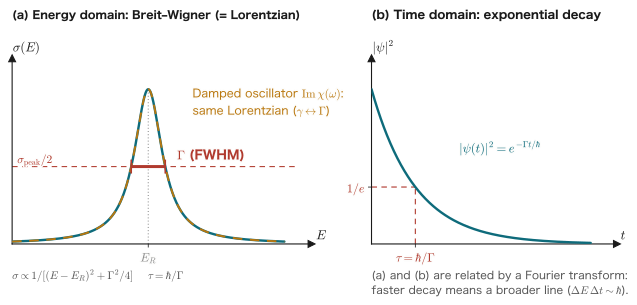
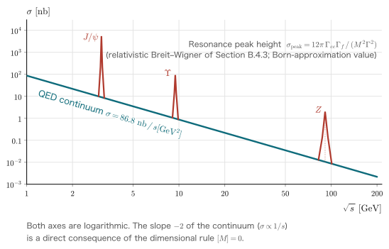

Appendix BFormulas for Decay Rates and Scattering Cross Sections
The quantities that an experimentalist in particle physics measures come down to just two. One is how fast a particle decays (the decay rate $\Gamma$, or the lifetime $\tau$), and the other is how readily particles collide (the cross section $\sigma$). A theorist, on the other hand, computes from the Feynman rules a complex number called the amplitude $\mathcal{M}$. The subject of this appendix is the bridge connecting the two. There are only two bridges: one for decays and one for scattering. Both have the same structure: “multiply $\abs{\mathcal{M}}^2$ by a phase-space weight and sum over the final states.”
In Chapter 8 we derived these two bridges from Fermi’s golden rule. The role of this appendix is to fold the formulas obtained there into usable form and collect them in one place. As general formulas they still contain multiple integrals and yield no numbers. We therefore carry out the phase-space integrals to the end for the three cases actually used, namely two-body decay, three-body decay, and two-body scattering, so that a number comes out on a calculator once $\abs{\mathcal{M}}^2$ is known. Concretely, the following three formulas are the destination of this appendix.
$$ \Gamma_{1\to2} = \frac{S\,\abs{\pp}}{8\pi\, m_1^2}\,\abs{\mathcal{M}}^2, \qquad \frac{\dd\Gamma_{1\to3}}{\dd m_{23}^2\,\dd m_{34}^2} = \frac{S\,\abs{\mathcal{M}}^2}{32(2\pi)^3\, m_1^3}, \qquad \frac{\dd\sigma}{\dd\Omega}\bigg|_\text{CM} = \frac{S\,\abs{\mathcal{M}}^2}{64\pi^2 s}\frac{\abs{\pp_f}}{\abs{\pp_i}} $$Once we have the formulas, the next concern is units. When we compute in natural units $\hbar=c=1$, decay rates come out in GeV and cross sections in the peculiar unit GeV$^{-2}$. To convert these back to seconds and barns, it suffices to know two numbers, $\hbar c=197.327\ \mathrm{MeV\,fm}$ and $(\hbar c)^2 = 0.3894\ \mathrm{GeV^2\,mb}$. Section B.3 is that conversion table, and it is referred to from every chapter of this book. Conversion may look like mechanical work, but dropping a single order of magnitude turns “agrees with experiment” into “does not agree,” so it is worth working through by hand at least once, however tedious.
The Breit–Wigner resonance of Section B.4 is the place in this appendix closest to materials science. The cross section of an unstable particle takes the Lorentzian form $1/[(E-E_R)^2+\Gamma^2/4]$, and its full width at half maximum $\Gamma$ is the inverse of the lifetime $\tau=\hbar/\Gamma$—near the resonance, this is the same expression as the response function of a damped oscillator. Reading a lifetime from the phonon linewidth in a Raman spectrum and reading a lifetime from the width of the resonance curve of the $Z$ boson are identical at the level of the equations. Readers who have worked through the damped oscillator and response functions in “Introduction to Linear Response Theory,” Chapters 2 and 3, should be able to read this section as “the particle-physics version of the same story.”
Section B.5, the last, lines up examples in which numbers were actually worked out: the cross section of $e^+e^-\to\mu^+\mu^-$, the lifetime of $\pi^+\to\mu^+\nu_\mu$, the $G_F^2m_\mu^5/192\pi^3$ of $\mu$ decay, the mean free path for neutron capture, and the reaction rate of DT nuclear fusion and the irradiation damage of the first wall. There is no need to memorize the formulas, but a feel for numbers such as “the lifetime of the $Z$ is $10^{-25}$ seconds,” “thermal neutrons can be stopped by $1\ \mathrm{mm}$ of $\mathrm{B_4C}$,” and “the nuclear fusion power density of a DT plasma is of order $\mathrm{MW/m^3}$” will serve you for a lifetime if you acquire it once by computing it yourself.
- The definitions of, and relations among, the decay rate $\Gamma$, the partial width $\Gamma_i$, the branching ratio $\mathrm{BR}_i=\Gamma_i/\Gamma$, and the lifetime $\tau=\hbar/\Gamma$
- The general formula for decays (the golden rule), and the meaning of the statistical factor $S$ as canceling the double counting of identical particles
- Carrying out the two-body phase-space integral to the end and deriving $\Gamma = S\abs{\pp}\abs{\mathcal{M}}^2/(8\pi m_1^2)$
- The general expression for the final-state momentum $\abs{\pp}$ in terms of the Källén function $\lambda(x,y,z)$, and its behavior near threshold
- The flatness of the three-body phase space in $\dd m_{23}^2\,\dd m_{34}^2$ (the principle of the Dalitz plot) and the equation of the boundary curve
- The definition of the cross section, the luminosity, and the three faces of the Lorentz-invariant flux factor $4\sqrt{(p_1\cdot p_2)^2-m_1^2m_2^2}$
- Derivation of the CM-frame two-body scattering formula $\dd\sigma/\dd\Omega = S\abs{\mathcal{M}}^2\abs{\pp_f}/(64\pi^2 s\abs{\pp_i})$, and its invariant form $\dd\sigma/\dd t$ in terms of the Mandelstam variables
- The relation between the laboratory frame and the CM frame (angle transformation and Jacobian), and the difference between the center-of-mass energies of a fixed target and a collider
- The conversion table for natural units: $\mathrm{GeV^{-1}}\to\mathrm{fm}$, $\mathrm{GeV^{-1}}\to\mathrm{s}$, $\mathrm{GeV^{-2}}\to\mathrm{mb}$ (millibarn), and a dictionary to the units of materials science (eV, Å, fs, cm$^{-1}$)
- The Breit–Wigner resonance formula, the relation between $\Gamma$ and $\tau$ through the Fourier transform, and the derivation of the $1/v$ law
- Connections to materials science: Matthiessen’s rule and branching ratios, the linewidth of anharmonic phonons, the kinematic factor of RBS and the Rutherford cross section, the damped oscillator, spectral function, and Breit–Wigner formula, and DT nuclear fusion and first-wall irradiation damage
B.1 Decays — General Formulas
B.1.1 Decay rate, lifetime, and branching ratio
Prepare $N(t)$ unstable particles. The number that decay per unit time is proportional to the number that are alive at that moment. If we write the constant of proportionality as $\Gamma$ (the decay rate), then
$$ \begin{equation} \frac{\dd N}{\dd t} = -\frac{\Gamma}{\hbar}\,N \quad\Longrightarrow\quad N(t) = N(0)\,\ee^{-\Gamma t/\hbar} \label{eq:B-expdecay} \end{equation} $$Here we have adopted the convention of measuring $\Gamma$ in dimensions of energy (the standard in particle physics). In this convention $\Gamma$ is also called the width of the particle and, as we will see in Section B.4, it is exactly the full width at half maximum of the resonance curve. The mean lifetime is
If $\Gamma$ is measured in MeV and $\tau$ in seconds, then using $\hbar=6.582\times10^{-22}\ \mathrm{MeV\,s}$ we have $\tau[\mathrm{s}]=6.582\times10^{-22}/\Gamma[\mathrm{MeV}]$.
A single particle usually has several ways of decaying. For example, the $Z$ boson decays into $e^+e^-$, $\mu^+\mu^-$, $\nu\bar\nu$, $q\bar q$, and so on. The decay rate for each mode $i$ is called the partial width $\Gamma_i$, and the total width is their sum.
$$ \begin{equation} \Gamma = \sum_i \Gamma_i, \qquad \mathrm{BR}_i \equiv \frac{\Gamma_i}{\Gamma} \qquad\left(\sum_i \mathrm{BR}_i = 1\right) \label{eq:B-br} \end{equation} $$We call $\mathrm{BR}_i$ the branching ratio. What experiments measure is, in many cases, the “total lifetime $\tau$” and the “branching ratio $\mathrm{BR}_i$,” and the quantity to be compared with theory, $\Gamma_i=\mathrm{BR}_i\,\hbar/\tau$, is the product of these two.
Connection to Materials Science: The branching ratio is Matthiessen’s rule itself
The relation “the total width is the sum of the partial widths” in Eq. \eqref{eq:B-br} is not peculiar to elementary particles. The relaxation time $\tau$ of an electron in a metal can be written in terms of the relaxation times $\tau_i$ of the individual scattering mechanisms (impurity scattering, phonon scattering, electron–electron scattering, grain-boundary scattering, …) as
$$ \frac{1}{\tau} = \sum_i \frac{1}{\tau_i} $$This is Matthiessen’s rule. If we substitute $\Gamma=\hbar/\tau$ and $\Gamma_i=\hbar/\tau_i$, it becomes literally the same equation as $\Gamma=\sum_i\Gamma_i$ in Eq. \eqref{eq:B-br}. Both follow from the property of the golden rule that “transition probabilities to independent final states add.”
Furthermore, the quantity on the condensed-matter side that corresponds to the branching ratio $\mathrm{BR}_i=\Gamma_i/\Gamma$ is “the fraction of the total resistance for which mechanism $i$ is responsible.” For example, if $\rho_\text{phonon}/\rho_\text{total}\simeq0.99$ in copper at room temperature, this can be read as “an electron in copper decays into phonons with a branching ratio of $99\%$.” When the sample is cooled to $4\ \mathrm{K}$, the branching ratio into phonons drops, the branching ratio of impurity scattering approaches $1$, and the residual resistance ratio (RRR) becomes measurable.
There is just one point of caution. Matthiessen’s rule holds only when the scattering mechanisms do not interfere with each other, that is, only when probabilities add rather than amplitudes. The same is true on the particle-physics side: $Z\to e^+e^-$ and $Z\to\mu^+\mu^-$ have different final states, so their probabilities add, but the two diagrams for $e^+e^-\to\mu^+\mu^-$, which lead to the same final state $\mu^+\mu^-$ ($\gamma$ exchange and $Z$ exchange in the $s$-channel; for the $Z$ vertex see Section 12.6.1 in Chapter 12), must be added at the amplitude level. If you are wrong about where to add, you drop the interference term.
B.1.2 The golden rule: general formula for decay
We write down the general formula for decay derived in Chapter 8 ($c=1$; as long as $\Gamma$ is measured in energy, $\hbar$ does not appear in the formula). When a particle 1 of mass $m_1$ decays, in its rest frame, into $n-1$ particles $2,3,\dots,n$,
This $\Gamma$ comes out in units of energy, as in the definition in Section B.1.1 (if $\abs{\mathcal{M}}$, $\pp$, and $m$ are measured in units of energy, the right-hand side has the dimension of energy to the first power). If you want the decay rate ($\mathrm{s^{-1}}$), use $\Gamma/\hbar$; the lifetime is $\tau=\hbar/\Gamma$. Some references define $\Gamma$ from the outset as a rate and attach $1/\hbar$ to the right-hand side (for example, Griffiths), so check how $\hbar$ appears together with the definition of $\Gamma$. Let us confirm the meaning of each component on the right-hand side.
Definition: Components of Eq. \eqref{eq:B-decay-general}
- $\mathcal{M}$ — the invariant amplitude. This is a complex number computed from the Feynman rules; for particles with spin we use $\overline{\abs{\mathcal{M}}^2}$, averaged over the spins of the initial state and summed over the spins of the final state (Chapters 9 and 10).
- $(2\pi)^4\delta^4(\cdots)$ — energy-momentum conservation. As we saw in Section A.2 of Appendix A, this factor arises as a necessary consequence of spacetime translation invariance.
- $\dfrac{\dd^3p_j}{(2\pi)^3 2E_j}$ — the invariant phase-space element. As shown in Section A.2.3 of Appendix A (the mass-shell condition $\delta(p^2-m^2)$), $\dd^3p/2E$ is Lorentz invariant. The $(2\pi)^3$ comes from the normalization of the states.
- $\dfrac{1}{2m_1}$ — the factor that cancels the relativistic normalization of the decaying particle. In the rest frame, $2E_1=2m_1$. In a general frame it becomes $2E_1$, and $\Gamma\propto1/E_1$, that is, time dilation comes out automatically (see the cosmic-ray muon example in Section B.5).
- $S$ — the statistical factor. It is discussed in the next subsection.
Math Note: Mass dimension of $\mathcal{M}$
$\Gamma$ has the dimension of energy, $[\mathrm{mass}]^1$. On the right-hand side of Eq. \eqref{eq:B-decay-general}, $\delta^4$ has $[\mathrm{mass}]^{-4}$, each $\dd^3p/2E$ has $[\mathrm{mass}]^{2}$, and the prefactor has $[\mathrm{mass}]^{-1}$. For a decay with $N=n$ external lines in total, the final state has $n-1$ particles, so
$$ 1 = -1 + 2(n-1) - 4 + 2\,[\mathcal{M}] \quad\Longrightarrow\quad [\mathcal{M}] = 4-n $$that is, if $N$ is the total number of external lines, $[\mathcal{M}]=4-N$. For $1\to2$, $[\mathcal{M}]=1$ (the dimension of mass); for $1\to3$ and $2\to2$, $[\mathcal{M}]=0$ (dimensionless); for $2\to3$, $[\mathcal{M}]=-1$. If you make a habit of checking this in the middle of a calculation, you will notice when a factor has been dropped.
B.1.3 The statistical factor $S$
Definition: Statistical factor
When the final state contains several groups of identical particles, with $j$ particles in a given group, multiply by $1/j!$ for each group.
$$ \begin{equation} S = \prod_{\text{groups of identical particles}} \frac{1}{j!} \label{eq:B-S} \end{equation} $$“Identical” means particles that have all quantum numbers the same and cannot be told apart. A particle and its antiparticle ($e^+$ and $e^-$) can be distinguished, so they are not identical. Quarks of different colors can also be distinguished.
Why do we need $1/j!$?
The integral in Eq. \eqref{eq:B-decay-general} lets the momenta $\pp_2,\pp_3,\dots$ of the final-state particles run independently over all of space. But if two of the final-state particles are identical, the configuration $(\pp_2,\pp_3)=(\bm{a},\bm{b})$ and the configuration $(\bm{b},\bm{a})$ are a physically identical final state. Integrating independently counts this twice. For $j$ identical particles it is counted $j!$ times. Therefore we divide back by multiplying by $1/j!$.
This is exactly the same operation as inserting $1/N!$ into the partition function of an ideal gas of identical particles in statistical mechanics (the Gibbs paradox). In both particle physics and statistical mechanics, the extra step is needed: “if you count things that cannot be distinguished as though they could be, you divide afterward.”
Note also that $S$ is a factor on the phase-space side, not part of $\abs{\mathcal{M}}^2$. On the side of the amplitude $\mathcal{M}$, one must properly add the diagrams corresponding to the interchange of identical particles (exchange diagrams) and, for fermions, include the relative sign $(-1)$. These are separate matters, so do not confuse them.
| Process | Identical particles in the final state | $S$ | Remarks |
|---|---|---|---|
| $\pi^0\to\gamma\gamma$ | two $\gamma$ | $1/2$ | The photon is its own antiparticle |
| $Z\to e^+e^-$ | none | $1$ | $e^+$ and $e^-$ can be distinguished |
| $K^0\to\pi^+\pi^-$ | none | $1$ | |
| $K^0\to\pi^0\pi^0$ | two $\pi^0$ | $1/2$ | |
| $\eta\to\pi^0\pi^0\pi^0$ | three $\pi^0$ | $1/6$ | $1/3!$ |
| $\omega\to\pi^+\pi^-\pi^0$ | none | $1$ | All three can be distinguished |
| $H\to gg$ | two $g$ | $1/2$ | The sum over colors is done on the $\abs{\mathcal{M}}^2$ side |
| $e^-e^-\to e^-e^-$ (Møller) | two $e^-$ | $1/2$ | The interference of the exchange diagram is on the $\mathcal{M}$ side |
| $e^+e^-\to e^+e^-$ (Bhabha) | none | $1$ | |
| $e^+e^-\to\gamma\gamma$ | two $\gamma$ | $1/2$ | |
| $pp\to pp\pi^0$ | two $p$ | $1/2$ |
Caution: Do not double count $S$ and the “symmetrization of the amplitude”
Some textbooks do not introduce $S$ and instead adopt the convention of “restricting the phase-space integral over the final state to a non-overlapping region.” Either way the answer is the same, but you must not do both. Also, adding the exchange diagram in computing $\abs{\mathcal{M}}^2$ and multiplying by $S=1/2$ are independent operations, and one must not omit one of them on the grounds of the other. For $e^-e^-\to e^-e^-$, add the direct and exchange diagrams and square (an interference term appears), and then multiply by $S=1/2$.
B.1.4 Two-body decay
This is the practically most important case. For $1\to2+3$, we carry out the integral in Eq. \eqref{eq:B-decay-general} completely.
Derivation 1: Two-body decay rate $\Gamma = S\abs{\pp}\abs{\mathcal{M}}^2/(8\pi m_1^2)$
Step 1: Sit in the rest frame. In the rest frame of particle 1, let $p_1^\mu=(m_1,\bm{0})$. Eq. \eqref{eq:B-decay-general} becomes
$$ \Gamma = \frac{S}{2m_1}\int \abs{\mathcal{M}}^2\,(2\pi)^4\, \delta^4(p_1-p_2-p_3)\, \frac{\dd^3p_2}{(2\pi)^3 2E_2}\frac{\dd^3p_3}{(2\pi)^3 2E_3} $$Step 2: Eliminate the $\pp_3$ integral with $\delta^3$. Decompose $\delta^4=\delta(m_1-E_2-E_3)\,\delta^3(\pp_2+\pp_3)$. The $\delta^3$ of the spatial components forces $\pp_3=-\pp_2$. If we then write $\pp\equiv\pp_2=-\pp_3$, the integral over $\dd^3p_3$ disappears and
$$ \Gamma = \frac{S}{2m_1}\cdot\frac{(2\pi)^4}{(2\pi)^6}\int \abs{\mathcal{M}}^2\,\delta(m_1-E_2-E_3)\,\frac{\dd^3p}{4E_2E_3} = \frac{S}{2m_1}\cdot\frac{1}{4\pi^2}\int \abs{\mathcal{M}}^2\,\delta(m_1-E_2-E_3)\,\frac{\dd^3p}{4E_2E_3} $$It is safe to count the powers of $2\pi$ separately: the numerator has $(2\pi)^4$ and the denominator has two factors of $(2\pi)^3$, for a total of $(2\pi)^6$, so the net result is $(2\pi)^{-2}=1/(4\pi^2)$.
Here $E_2=\sqrt{\abs{\pp}^2+m_2^2}$ and $E_3=\sqrt{\abs{\pp}^2+m_3^2}$, and both are functions of $\abs{\pp}$ alone.
Step 3: Separate the angular integration. Write $\dd^3p=\abs{\pp}^2\dd\abs{\pp}\,\dd\Omega$. When the decaying particle is at rest and there is no reference direction (the spin average has been taken), $\abs{\mathcal{M}}^2$ does not depend on the angle. Then $\int\dd\Omega=4\pi$ comes out simply.
$$ \Gamma = \frac{S}{2m_1}\cdot\frac{4\pi}{4\pi^2}\int_0^\infty \abs{\mathcal{M}}^2\,\delta(m_1-E_2-E_3)\,\frac{\abs{\pp}^2\,\dd\abs{\pp}}{4E_2E_3} $$Step 4: Eliminate the radial integral with the $\delta$ function. Use the composite-function rule of Appendix A, $\delta(f(x))=\delta(x-x_0)/\abs{f'(x_0)}$. The derivative of $f(\abs{\pp})=m_1-E_2-E_3$ is given by
$$ \frac{\dd}{\dd\abs{\pp}}\big(E_2+E_3\big) = \frac{\abs{\pp}}{E_2}+\frac{\abs{\pp}}{E_3} = \abs{\pp}\,\frac{E_2+E_3}{E_2E_3} $$At the zero $\abs{\pp}$, energy conservation $E_2+E_3=m_1$ holds, so $\abs{f'}=\abs{\pp}\,m_1/(E_2E_3)$. Therefore
$$ \int_0^\infty \delta(m_1-E_2-E_3)\,g(\abs{\pp})\,\dd\abs{\pp} = \frac{E_2E_3}{\abs{\pp}\,m_1}\;g(\abs{\pp}) $$Step 5: Substitute and simplify. Since $g(\abs{\pp})=\abs{\mathcal{M}}^2\abs{\pp}^2/(4E_2E_3)$,
$$ \Gamma = \frac{S}{2m_1}\cdot\frac{1}{\pi}\cdot \abs{\mathcal{M}}^2\,\frac{\abs{\pp}^2}{4E_2E_3}\cdot\frac{E_2E_3}{\abs{\pp}\,m_1} = \frac{S}{2m_1}\cdot\frac{\abs{\mathcal{M}}^2\,\abs{\pp}}{4\pi m_1} $$It is satisfying that $E_2E_3$ cancels out so neatly. Simplifying, we obtain
$\blacksquare$ Here $\abs{\pp}$ is the magnitude of the momentum that the final-state particles have in the rest frame, and it is determined from $m_1,m_2,m_3$ in the next subsection.
Caution: Count the powers of $2\pi$ together
The easiest place to stumble in calculations of this kind is the powers of $2\pi$. In Eq. \eqref{eq:B-decay-general}, there is one factor $(2\pi)^4$ in front of $\delta^4$, and one factor $(2\pi)^{-3}$ for each final-state particle. Therefore, for $k$ final-state particles, the overall $2\pi$ factor is $(2\pi)^{4-3k}$. For two-body decay, $k=2$, it is $(2\pi)^{-2}$; for three-body decay, $k=3$, it is $(2\pi)^{-5}$; for two-body scattering, $k=2$, it is $(2\pi)^{-2}$. It is good practice to write this out on a separate line at the start of the calculation and to multiply it in at the end. If you mix it up with the $4\pi$ or $2\pi$ that come out of the angular integration, you will almost certainly make a mistake.
The general expression for $\abs{\pp}$ in terms of the Källén function
To use Eq. \eqref{eq:B-decay2}, we must find the final-state momentum $\abs{\pp}$ in the rest frame from the three masses. This is pure kinematics, and the answer can be written with the Källén function (Källén’s $\lambda$ function, or triangle function). $\lambda(x,y,z)$ equals the square of $-16$ times the area of a triangle whose sides have lengths $\sqrt x,\sqrt y,\sqrt z$ (another form of Heron’s formula), which is why it is called the triangle function. The literal Japanese rendering of “triangle function,” sankaku-kansū, is already the established name for the trigonometric functions $\sin,\cos$, so that name is not used in this book.
Derivation 2: $\abs{\pp} = \sqrt{\lambda(m_1^2,m_2^2,m_3^2)}\,/\,(2m_1)$
Step 1: Write down energy conservation. In the rest frame $\abs{\pp_2}=\abs{\pp_3}=\abs{\pp}$, so
$$ m_1 = \sqrt{\abs{\pp}^2+m_2^2} + \sqrt{\abs{\pp}^2+m_3^2} $$Step 2: Move one term to the other side and square.
$$ \left(m_1-\sqrt{\abs{\pp}^2+m_2^2}\right)^2 = \abs{\pp}^2+m_3^2 $$ $$ m_1^2 - 2m_1\sqrt{\abs{\pp}^2+m_2^2} + \abs{\pp}^2+m_2^2 = \abs{\pp}^2+m_3^2 $$The key point is that $\abs{\pp}^2$ cancels on both sides.
Step 3: Isolate the remaining square root and square again.
$$ 2m_1\sqrt{\abs{\pp}^2+m_2^2} = m_1^2+m_2^2-m_3^2 \quad\Longrightarrow\quad E_2 = \sqrt{\abs{\pp}^2+m_2^2} = \frac{m_1^2+m_2^2-m_3^2}{2m_1} $$Along the way we see that in a two-body decay the energy of the final state is completely determined (there is no continuous distribution). This is the basis for the experimental fact that “the $\gamma$ ray from a two-body decay is monochromatic.”
Step 4: Compute $\abs{\pp}^2=E_2^2-m_2^2$.
$$ \abs{\pp}^2 = \left(\frac{m_1^2+m_2^2-m_3^2}{2m_1}\right)^2 - m_2^2 = \frac{(m_1^2+m_2^2-m_3^2)^2 - 4m_1^2m_2^2}{4m_1^2} $$Step 5: Expand the numerator into a symmetric form. Expanding $(m_1^2+m_2^2-m_3^2)^2$ gives
$$ m_1^4+m_2^4+m_3^4+2m_1^2m_2^2-2m_1^2m_3^2-2m_2^2m_3^2 $$and subtracting $4m_1^2m_2^2$ from this gives
$$ m_1^4+m_2^4+m_3^4-2m_1^2m_2^2-2m_1^2m_3^2-2m_2^2m_3^2 \equiv \lambda(m_1^2,m_2^2,m_3^2) $$which is an expression completely symmetric in $m_1^2,m_2^2,m_3^2$. $\blacksquare$
$\lambda$ can be factored. Returning to $x=m_1^2$ and so on and simplifying, we obtain
$$ \begin{equation} \abs{\pp} = \frac{1}{2m_1}\sqrt{\Big[m_1^2-(m_2+m_3)^2\Big]\Big[m_1^2-(m_2-m_3)^2\Big]} \label{eq:B-pfac} \end{equation} $$This form is more convenient both for plugging in numbers and for reading off the threshold.
Physical Meaning: Behavior near threshold
The first bracket in Eq. \eqref{eq:B-pfac}, $m_1^2-(m_2+m_3)^2$, vanishes as $m_1\to m_2+m_3$. That is, when the decay is only just allowed (the threshold), the final-state momentum goes to zero. If we set $m_1 = m_2+m_3+\epsilon$ and expand for $\epsilon\to0$,
$$ \abs{\pp} \simeq \sqrt{\frac{2m_2m_3}{m_2+m_3}\,\epsilon}\;\propto\;\sqrt{\epsilon} $$that is, $\abs{\pp}\propto\sqrt{\epsilon}$. Therefore, by Eq. \eqref{eq:B-decay2}, $\Gamma\propto\sqrt{\epsilon}$ (provided $\abs{\mathcal{M}}^2$ is finite at threshold). This square-root behavior is a universal property of two-body phase space: the same $\sqrt{\ }$ appears for the same reason (the three-dimensional phase space of a free particle) in $S$-wave neutron emission in nuclear physics and in the density of states $D(E)\propto\sqrt{E-E_c}$ at a band edge in a semiconductor.
Conversely, if $m_1\gg m_2,m_3$, then $\abs{\pp}\to m_1/2$ and $\Gamma\to S\abs{\mathcal{M}}^2/(16\pi m_1)$. If $\abs{\mathcal{M}}$ were a constant independent of the masses, then $\Gamma\propto1/m_1$, and heavier particles would live longer. In reality, however, $[\mathcal{M}]=1$ (the dimension is mass), so $\abs{\mathcal{M}}\propto m_1$ in many cases, and then $\Gamma\propto m_1$, that is, heavier particles decay faster. Most of the difference of $17$ orders of magnitude between the $Z$ boson ($91\ \mathrm{GeV}$, $\tau\sim10^{-25}\ \mathrm{s}$) and the $\pi^\pm$ ($0.14\ \mathrm{GeV}$, $\tau\sim10^{-8}\ \mathrm{s}$) can be explained by this dimensional counting and the difference in coupling constants.
Connection to Materials Science: The linewidth of an anharmonic phonon is a “two-body decay of the phonon”
In the harmonic approximation, a phonon in a crystal is an eigenmode that lives forever. Once the cubic term of the interatomic potential (the third-order force constant $\Phi_{\lambda\lambda'\lambda''}$) is included, however, a single phonon $\lambda$ decays into two phonons $\lambda',\lambda''$. This is literally a $1\to2$ decay, and its decay rate can be written with the golden rule. To lowest order in perturbation theory,
$$ \Gamma_\lambda \;\propto\; \sum_{\lambda'\lambda''}\abs{\Phi_{\lambda\lambda'\lambda''}}^2 \Big[(n_{\lambda'}+n_{\lambda''}+1)\,\delta(\omega_\lambda-\omega_{\lambda'}-\omega_{\lambda''}) + 2(n_{\lambda'}-n_{\lambda''})\,\delta(\omega_\lambda+\omega_{\lambda'}-\omega_{\lambda''})\Big] $$(the prefactor depends on the convention of the literature; $n_\lambda$ is the Bose distribution $[\ee^{\hbar\omega_\lambda/k_BT}-1]^{-1}$). Compare this with Eq. \eqref{eq:B-decay-general}. Here $\abs{\Phi}^2$ plays the role of $\abs{\mathcal{M}}^2$, $\delta(\omega-\omega'-\omega'')$ is the energy-conservation $\delta$, and $\sum_{\lambda'\lambda''}$ (subject to the crystal-momentum conservation constraint $\qq=\qq'+\qq''+\bm{G}$) is the phase-space integral. There are only two differences: (i) because the process takes place in a heat bath rather than in vacuum, the Bose factors $(n'+n''+1)$ and $(n'-n'')$ appear, and (ii) because the system has discrete rather than continuous translation invariance, a reciprocal lattice vector $\bm{G}$ can enter the momentum conservation (the Umklapp process).
The first term describes the process in which “$\lambda$ splits into $\lambda'$ and $\lambda''$,” and even as $T\to0$ the factor $(0+0+1)=1$ remains. This is the zero-point decay, and it is the reason the phonon linewidth does not vanish even at absolute zero. It is exactly the same situation as the particle-physics statement that “the $Z$ decays even in vacuum.” The second term describes the merging process in which “$\lambda$ absorbs $\lambda'$ and becomes $\lambda''$”; as $T\to0$, $n'-n''\to0$ and it vanishes.
The connection to experiment is also the same as in Eq. \eqref{eq:B-tau}. If $\Gamma$ (in energy units) is the full width at half maximum (FWHM) of a phonon peak measured by Raman spectroscopy or inelastic neutron scattering, the phonon lifetime is $\tau=\hbar/\Gamma$. For example, for $\Gamma=3\ \mathrm{cm^{-1}}=0.372\ \mathrm{meV}$, $\tau=\hbar/\Gamma=1.8\ \mathrm{ps}$ (Exercise B.6 in Section B.6). Here is one practical caution. In this appendix $\Gamma$ is consistently the full width at half maximum (FWHM), with $\tau=\hbar/\Gamma$, but the linewidth $\Gamma_\lambda$ output by first-principles phonon codes (ALAMODE, phono3py, and so on) is often defined as the imaginary part of the self-energy, that is, the half width at half maximum (HWHM), in which case the lifetime is $\tau=\hbar/(2\Gamma_\lambda)$. If you substitute without checking which definition is used, the lifetime will be wrong by a factor of 2. The product of this lifetime and the group velocity is the mean free path, which connects directly to the lattice thermal conductivity $\kappa=\frac{1}{3}\sum_\lambda C_\lambda v_\lambda^2\tau_\lambda$. Designing the low thermal conductivity of thermoelectric materials from first principles is the task of computing the phonon “decay rate.” The particle-physics formulas of Appendix B serve, without modification, as design equations for thermoelectric conversion materials.
B.1.5 Three-body decay and the Dalitz plot
In the three-body decay $1\to2+3+4$, the momenta of the final state are not determined by kinematics alone. Energy-momentum conservation gives four conditions, but the final-state momenta have $3\times3=9$ components. This leaves 5 degrees of freedom, of which 3 are the overall orientation (the Euler angles), so there are only 2 physically meaningful degrees of freedom. How to choose these two was Dalitz’s idea.
Definition: Invariant-mass-squared variables
Label the daughter particles $2,3,4$ and define the invariant mass squared of each pair by
$$ m_{23}^2 \equiv (p_2+p_3)^2,\qquad m_{34}^2 \equiv (p_3+p_4)^2,\qquad m_{24}^2 \equiv (p_2+p_4)^2 $$These are Lorentz invariant, and they are not independent:
$$ m_{23}^2+m_{34}^2+m_{24}^2 = m_1^2+m_2^2+m_3^2+m_4^2 $$(Proof: $(p_2+p_3)^2+(p_3+p_4)^2+(p_2+p_4)^2 = 2(p_2^2+p_3^2+p_4^2)+2(p_2\cdot p_3+p_3\cdot p_4+p_2\cdot p_4)$, while $m_1^2=(p_2+p_3+p_4)^2 = p_2^2+p_3^2+p_4^2+2(p_2\cdot p_3+p_3\cdot p_4+p_2\cdot p_4)$. Subtract the two.) Hence only 2 are independent, which corresponds to the 2 degrees of freedom counted above.
Derivation 3: The three-body phase space is flat in $\dd m_{23}^2\,\dd m_{34}^2$
Step 0: Notation. Write the invariant phase-space element as
$$ \dd\Phi_n(P;p_2,\dots) \equiv (2\pi)^4\delta^4\!\Big(P-\sum p_j\Big)\prod_j\frac{\dd^3p_j}{(2\pi)^3 2E_j} $$The result obtained in Derivation 1 can be written, in the rest frame of $\sqrt{s}$, as
$$ \begin{equation} \dd\Phi_2 = \frac{1}{16\pi^2}\,\frac{\abs{\pp^*}}{\sqrt{s}}\,\dd\Omega^*, \qquad \Phi_2 = \frac{\abs{\pp^*}}{4\pi\sqrt{s}} \label{eq:B-phi2} \end{equation} $$($\abs{\pp^*}$ is the two-body momentum given by Eq. \eqref{eq:B-kallen}).
Step 1: Decompose the phase space recursively. Let $q\equiv p_2+p_3$ and introduce $q^2=m_{23}^2$ as a new integration variable. Inserting the identity
$$ 1 = \int \dd m_{23}^2\;\delta(q^2-m_{23}^2) = \int \frac{\dd m_{23}^2}{2\pi}\;(2\pi)\delta(q^2-m_{23}^2) $$and using the mass-shell formula of Appendix A, the $3$-body phase space factorizes into the product of a two-body phase space for “$1\to(23)+4$” and one for “$(23)\to2+3$”:
$$ \dd\Phi_3(p_1;p_2,p_3,p_4) = \dd\Phi_2(p_1;q,p_4)\;\frac{\dd m_{23}^2}{2\pi}\;\dd\Phi_2(q;p_2,p_3) $$This corresponds to the two-stage reading: “first the parent decays into a particle of virtual mass $m_{23}$ and particle $4$, and then that virtual particle decays into $2$ and $3$.”
Step 2: Substitute Eq. \eqref{eq:B-phi2} into each factor. Let $\abs{\pp_4^*}$ be the momentum when the $(23)$ system and $4$ emerge back to back in the rest frame of the parent, and let $\abs{\pp_2^{**}}$ be the momentum when $2$ and $3$ emerge back to back in the rest frame of $(23)$. Then
$$ \dd\Phi_3 = \frac{1}{16\pi^2}\frac{\abs{\pp_4^*}}{m_1}\dd\Omega_4^* \;\cdot\;\frac{\dd m_{23}^2}{2\pi}\;\cdot\; \frac{1}{16\pi^2}\frac{\abs{\pp_2^{**}}}{m_{23}}\dd\Omega_2^{**} $$Step 3: Integrate over the angles that carry no meaning. Since $\dd\Omega_4^*$ is the orientation of the whole system, $\int\dd\Omega_4^*=4\pi$. Of $\dd\Omega_2^{**}$, the azimuthal angle also does not affect the physics, so $\int\dd\varphi=2\pi$. What remains is the single variable $\dd\cos\theta^{**}$.
$$ \dd\Phi_3 = \frac{4\pi\cdot2\pi}{(2\pi)(16\pi^2)^2}\, \frac{\abs{\pp_4^*}\,\abs{\pp_2^{**}}}{m_1\,m_{23}}\;\dd m_{23}^2\,\dd\cos\theta^{**} = \frac{1}{64\pi^3}\, \frac{\abs{\pp_4^*}\,\abs{\pp_2^{**}}}{m_1\,m_{23}}\;\dd m_{23}^2\,\dd\cos\theta^{**} $$(Check of the coefficient: $8\pi^2/[(2\pi)\cdot256\pi^4]=8\pi^2/(512\pi^5)=1/(64\pi^3)$.)
Step 4: Replace $\cos\theta^{**}$ by $m_{34}^2$. In the rest frame of $(23)$ we have $\pp_3^{**}=-\pp_2^{**}$. Let the momentum of particle $4$ be $\pp_4^{**}$ and let $\theta^{**}$ be its angle with $\pp_2^{**}$. Then
$$ m_{34}^2 = (p_3+p_4)^2 = m_3^2+m_4^2+2\big(E_3^{**}E_4^{**} + \abs{\pp_2^{**}}\abs{\pp_4^{**}}\cos\theta^{**}\big) $$(we used $\pp_3^{**}\cdot\pp_4^{**} = -\pp_2^{**}\cdot\pp_4^{**} = -\abs{\pp_2^{**}}\abs{\pp_4^{**}}\cos\theta^{**}$). Therefore
$$ \dd m_{34}^2 = 2\,\abs{\pp_2^{**}}\,\abs{\pp_4^{**}}\,\dd\cos\theta^{**} $$Step 5: Relate $\abs{\pp_4^{**}}$ and $\abs{\pp_4^{*}}$. Both are built from the same $\lambda(m_1^2,m_{23}^2,m_4^2)$, and only the denominators differ:
$$ \abs{\pp_4^{*}} = \frac{\sqrt{\lambda(m_1^2,m_{23}^2,m_4^2)}}{2m_1}, \qquad \abs{\pp_4^{**}} = \frac{\sqrt{\lambda(m_1^2,m_{23}^2,m_4^2)}}{2m_{23}} \quad\Longrightarrow\quad \abs{\pp_4^{**}} = \frac{m_1}{m_{23}}\abs{\pp_4^{*}} $$(The former is the value when $(23)$ and $4$ emerge back to back in the rest frame of the parent; the latter is the value obtained by looking at the kinematics of the parent and $4$ in the rest frame of $(23)$.)
Step 6: Substitute everything.
$$ \dd\Phi_3 = \frac{1}{64\pi^3}\frac{\abs{\pp_4^*}\abs{\pp_2^{**}}}{m_1 m_{23}} \cdot\frac{\dd m_{23}^2\,\dd m_{34}^2}{2\abs{\pp_2^{**}}\abs{\pp_4^{**}}} = \frac{1}{128\pi^3}\frac{\abs{\pp_4^*}}{m_1 m_{23}} \cdot\frac{m_{23}}{m_1\abs{\pp_4^{*}}}\,\dd m_{23}^2\,\dd m_{34}^2 = \frac{\dd m_{23}^2\,\dd m_{34}^2}{128\pi^3\,m_1^2} $$$\abs{\pp_2^{**}}$, $\abs{\pp_4^{*}}$, and $m_{23}$ have all cancelled out cleanly. $\blacksquare$
Hence, from $\dd\Gamma = (S/2m_1)\abs{\mathcal{M}}^2\dd\Phi_3$,
Physical Meaning: This is why the Dalitz plot is effective
On the right-hand side of Eq. \eqref{eq:B-dalitz}, the only factor that depends on $m_{23}^2$ or $m_{34}^2$ is $\abs{\mathcal{M}}^2$. Therefore:
- If $\abs{\mathcal{M}}^2$ is constant, plotting the events on the $(m_{23}^2,m_{34}^2)$ plane fills the interior of the boundary uniformly.
- Conversely, any nonuniformity is $100\%$ information about the dynamics ($\abs{\mathcal{M}}^2$).
This is the power of the Dalitz plot. For example, if the $(23)$ system has a resonance of mass $M_R$, a vertical (or horizontal) band appears at $m_{23}^2\simeq M_R^2$. The width of the band gives the resonance width $\Gamma_R$, and the intensity distribution along the band gives the spin of the resonance (the angular distribution takes the form of a Legendre polynomial). One can do the same thing as searching for a resonance in a scattering experiment using decay events alone.
Dalitz invented this plot in 1953, with the aim of determining whether $\tau\to3\pi$ and $\theta\to2\pi$ are the same particle (the $\theta$–$\tau$ puzzle of Chapter 6). By examining the deviation from a uniform distribution, the parity of the $3\pi$ system could be determined, which ultimately led to the discovery of parity nonconservation in the weak interaction. Today it remains the main tool for measuring CP violation in the decays of $D$ mesons and $B$ mesons.
Theorem: The boundary of the Dalitz plot
For fixed $m_{23}^2$, the allowed range of $m_{34}^2$ is given as follows. Let the energies of particle 3 and particle 4 in the rest frame of $(23)$ be
$$ E_3^{**} = \frac{m_{23}^2-m_2^2+m_3^2}{2m_{23}}, \qquad E_4^{**} = \frac{m_1^2-m_{23}^2-m_4^2}{2m_{23}} $$Then
$$ \begin{equation} \big(m_{34}^2\big)_{\max/\min} = \big(E_3^{**}+E_4^{**}\big)^2 -\left(\sqrt{E_3^{**2}-m_3^2}\;\mp\;\sqrt{E_4^{**2}-m_4^2}\right)^2 \label{eq:B-dalitz-bound} \end{equation} $$(the upper sign is $\max$, the lower sign is $\min$). The range of $m_{23}^2$ itself is $(m_2+m_3)^2 \le m_{23}^2 \le (m_1-m_4)^2$.
The derivation is simple: writing $m_{34}^2 = (p_3+p_4)^2$ in the $(23)$ frame, $\cos\theta^{**}=\pm1$ gives the two extremes. For $\cos\theta^{**}=+1$ (particles 2 and 4 in the same direction, that is, particles 3 and 4 in opposite directions), the spatial momenta are subtracted and $m_{34}^2$ is maximal; for $\cos\theta^{**}=-1$ (particles 3 and 4 in the same direction) it is minimal.

Example: Check of the three-body phase space in the massless limit
If all the daughter particles are massless, then $m_{23}^2+m_{34}^2+m_{24}^2=m_1^2$ with each term $\ge0$, so the Dalitz region is the right triangle of Figure B.2(b), and its area is $m_1^4/2$. Integrating the phase-space part of Eq. \eqref{eq:B-dalitz} gives
$$ \Phi_3 = \frac{1}{128\pi^3 m_1^2}\cdot\frac{m_1^4}{2} = \frac{m_1^2}{256\pi^3} $$This agrees with the value obtained by setting $n=3$ in the general formula for the massless $n$-body phase space,
$$ \Phi_n = \frac{1}{2}\,\frac{1}{(4\pi)^{2n-3}}\,\frac{(m_1^2)^{n-2}}{(n-1)!\,(n-2)!} $$(setting $n=2$ gives $\Phi_2=1/(8\pi)$, which also agrees with the value obtained by putting $\abs{\pp^*}=\sqrt{s}/2$ into Eq. \eqref{eq:B-phi2}). It is a cheap and reliable check that no coefficient has been dropped.
Furthermore, the three-body decay rate for constant $\abs{\mathcal{M}}^2$ is $\Gamma = S\abs{\mathcal{M}}^2 m_1/(512\pi^3)$. Since $[\mathcal{M}]=0$ (from the dimension rule of Section B.1.2 with $N=4$), the right-hand side indeed has the dimension of mass to the first power.
B.2 Cross Sections — General Formulas
B.2.1 Cross section and luminosity
Definition: Cross section
Suppose a beam of density $n_1$ and velocity $v$ strikes a target of areal density $N_2/A$. Let $R$ be the number of reactions occurring per unit time. The cross section $\sigma$ is defined by
$$ \begin{equation} R = \underbrace{(n_1 v)}_{\text{incident flux}}\times N_2 \times \sigma \label{eq:B-sigma-def} \end{equation} $$The quantity $\sigma$ has the dimension of an area, and can be read as “the effective target area that a single target particle presents to the incident particle.” The unit is
$$ 1\ \mathrm{barn} \equiv 10^{-28}\ \mathrm{m^2} = 10^{-24}\ \mathrm{cm^2} = 100\ \mathrm{fm^2} $$($1\ \mathrm{mb}=10^{-3}\ \mathrm{b}$, $1\ \mu\mathrm{b}=10^{-6}\ \mathrm{b}$, $1\ \mathrm{nb}=10^{-9}\ \mathrm{b}$, $1\ \mathrm{pb}=10^{-12}\ \mathrm{b}$). $1\ \mathrm{barn}$ is roughly the geometric cross section of a uranium nucleus, and the name comes from nuclear-physics experimentalists saying that it is “as easy to hit as the wall of a barn.”
At a collider, beams are made to collide with each other, so we call the combination “flux × number of targets” in Eq. \eqref{eq:B-sigma-def} the luminosity $\mathcal{L}$ (its dimension is $[\text{area}]^{-1}[\text{time}]^{-1}$):
$$ \begin{equation} R = \mathcal{L}\,\sigma, \qquad N_\text{events} = \sigma\int\mathcal{L}\,\dd t \equiv \sigma\,L_\text{int} \label{eq:B-lumi} \end{equation} $$The design luminosity of the LHC is $\mathcal{L}=10^{34}\ \mathrm{cm^{-2}s^{-1}}$. The integrated luminosity $L_\text{int}$ is customarily measured in $\mathrm{fb^{-1}}$ (inverse femtobarns): under $1\ \mathrm{fb^{-1}}$, a process with a cross section of $1\ \mathrm{fb}$ occurs once on average ($N_\text{events}$ in Eq. \eqref{eq:B-lumi} is an expectation value, and the actual number of events follows a Poisson distribution).
B.2.2 The general formula and the flux factor
The general formula for scattering derived in Chapter 8 reads, for $1+2\to3+4+\cdots+n$,
The only difference from the decay formula \eqref{eq:B-decay-general} is that the prefactor changes from $1/(2m_1)$ to $1/(4\sqrt{(p_1\cdot p_2)^2-(m_1m_2)^2})$. This is called the flux factor. The factor $\hbar^2c^2$ has been attached so that $\sigma$ comes out in units of area (it equals $1$ in natural units).
Derivation 4: Three faces of the flux factor
Let $F \equiv 4\sqrt{(p_1\cdot p_2)^2-(m_1m_2)^2}$. It is written purely in terms of scalar products, so it is Lorentz invariant.
(i) CM frame. With $p_1=(E_1,\pp_i)$ and $p_2=(E_2,-\pp_i)$ we have $p_1\cdot p_2 = E_1E_2+\abs{\pp_i}^2$, so
$$ (p_1\cdot p_2)^2-m_1^2m_2^2 = (E_1E_2+\abs{\pp_i}^2)^2 - (E_1^2-\abs{\pp_i}^2)(E_2^2-\abs{\pp_i}^2) $$On expanding, the $E_1^2E_2^2$ terms cancel, and so do the $\abs{\pp_i}^4$ terms, leaving
$$ = 2E_1E_2\abs{\pp_i}^2 + E_1^2\abs{\pp_i}^2+E_2^2\abs{\pp_i}^2 = \abs{\pp_i}^2(E_1+E_2)^2 = \abs{\pp_i}^2\,s $$Therefore
$$ \begin{equation} F_\text{CM} = 4\,\abs{\pp_i}\sqrt{s} \label{eq:B-flux-cm} \end{equation} $$(ii) Laboratory frame (fixed target). With $p_2=(m_2,\bm{0})$ we have $p_1\cdot p_2 = E_1^\text{lab}m_2$, and
$$ (E_1^\text{lab}m_2)^2 - m_1^2m_2^2 = m_2^2\big(E_1^{\text{lab}2}-m_1^2\big) = m_2^2\abs{\pp_1^\text{lab}}^2 $$ $$ \begin{equation} F_\text{lab} = 4\,m_2\,\abs{\pp_1^\text{lab}} \label{eq:B-flux-lab} \end{equation} $$(iii) Collinear collision (exact at any energy). When the two particles move along the same line, let $q_1,q_2$ be the signed components of their momenta. Then $p_1\cdot p_2=E_1E_2-q_1q_2$, so
$$ (p_1\cdot p_2)^2-m_1^2m_2^2 = (E_1q_2-E_2q_1)^2 = E_1^2E_2^2\,(v_1-v_2)^2 \quad\Longrightarrow\quad F = 4E_1E_2\,\abs{\vv_1-\vv_2} $$This is not an approximation but an identity, and both the CM frame of (i) ($4E_1E_2(\abs{\pp_i}/E_1+\abs{\pp_i}/E_2)=4\abs{\pp_i}\sqrt{s}$) and the fixed target of (ii) ($4E_1m_2\cdot\abs{\pp_1^\text{lab}}/E_1=4m_2\abs{\pp_1^\text{lab}}$) are reproduced as special cases of this form. In the nonrelativistic limit, moreover, $E_i\to m_i$ gives $F\simeq4m_1m_2\abs{\vv_1-\vv_2}$. This is the origin of the name “flux factor”: $4E_1E_2$ is the relativistic normalization of the two particles, and $\abs{\vv_1-\vv_2}$ is the velocity factor. The “$n_1v$” of Eq. \eqref{eq:B-sigma-def} enters here. $\blacksquare$
Caution: $\abs{\vv_1-\vv_2}$ is not the “relative velocity”
The quantity $\abs{\vv_1-\vv_2}$ in Derivation 4(iii) is the magnitude of the difference of two velocity vectors, not the relativistic relative velocity (the velocity of one particle seen from the rest frame of the other). In a head-on collision between two particles near the speed of light, $\abs{\vv_1-\vv_2}\to2c$, and the seemingly odd value “twice the speed of light” appears. But this is not a relative velocity; it is simply “the speed at which the two beams pass each other,” so there is no contradiction in its exceeding $c$. Note, however, that $F=4E_1E_2\abs{\vv_1-\vv_2}$ holds when the two particles move along the same line (head-on collisions at a collider and fixed-target collisions both qualify), and within that restriction it is exact regardless of how large or small the energies are. For a general configuration in which the two momenta are not collinear, this form does not agree with the invariant, so one must return to the invariant definition of $F$ in Eq. \eqref{eq:B-scatt-general}.
Connection to Materials Science: Macroscopic cross section, mean free path, and the Beer–Lambert law
Eq. \eqref{eq:B-sigma-def} is used on the materials side as follows. When a beam enters a target material of number density $n$, its intensity over a thickness $\dd x$ changes by
$$ \dd I = -I\,n\sigma\,\dd x \quad\Longrightarrow\quad I(x) = I_0\,\ee^{-x/\lambda}, \qquad \lambda = \frac{1}{n\sigma}, \qquad \Sigma \equiv n\sigma $$that is, it is attenuated. We call $\Sigma$ the macroscopic cross section (in units of $\mathrm{cm^{-1}}$) and $\lambda$ the mean free path. In form, this exponential attenuation is exactly the same as the decay law \eqref{eq:B-expdecay}, with $x$ corresponding to $ct$ and $\lambda$ to $c\tau$.
This is the common framework behind neutron shielding (the $\mathrm{B_4C}$ example in Section B.5), the X-ray absorption coefficient $\mu=n\sigma$, the inelastic mean free path in electron microscopy (the $t/\lambda$ method of EELS measures sample thickness), and the escape depth of photoelectrons in XPS. What particle physics calls the “cross section $\sigma$” goes by other names in materials analysis (the “absorption coefficient $\mu$,” the “scattering length $b$,” the “atomic scattering factor $f$,” and so on), but the content is the same $\sigma$.
One practical caution. The “scattering length $b$” that appears in neutron-scattering textbooks has the dimension of the square root of a cross section, and is related to it by $\sigma=4\pi b^2$ (for isotropic scattering). The quantity $b$ corresponds to the amplitude $\mathcal{M}$, whereas $\sigma$ corresponds to $\abs{\mathcal{M}}^2$. In coherent scattering one adds the $b$ (at the amplitude stage) and then squares, whereas in incoherent scattering one adds $\abs{b}^2$. The caution in Section B.1.1 about “where to add” applies here just as it stands.
B.2.3 Two-body scattering: the CM-frame formula
Derivation 5: $\dd\sigma/\dd\Omega\big|_\text{CM} = S\abs{\mathcal{M}}^2\abs{\pp_f}/(64\pi^2 s\abs{\pp_i})$
Step 1: The final-state phase space has exactly the same form as in two-body decay. Setting $n=4$ (two final-state particles) in Eq. \eqref{eq:B-scatt-general}, the integral part becomes the same computation as in Steps 2–4 of Derivation 1. The only difference is that the “parent mass $m_1$” is replaced by the “center-of-mass energy $\sqrt{s}$.” If we stop just before the angular integration of Step 3 of Derivation 1, without carrying it out, we obtain
$$ \int(2\pi)^4\delta^4(P-p_3-p_4)\frac{\dd^3p_3}{(2\pi)^32E_3}\frac{\dd^3p_4}{(2\pi)^32E_4} \;\longrightarrow\; \dd\Phi_2 = \frac{1}{16\pi^2}\,\frac{\abs{\pp_f}}{\sqrt{s}}\,\dd\Omega $$(Eq. \eqref{eq:B-phi2}). Here $\abs{\pp_f}$ is the magnitude of the momentum of a final-state particle in the CM frame.
Step 2: Insert the flux factor. From Eq. \eqref{eq:B-flux-cm}, $F_\text{CM}=4\abs{\pp_i}\sqrt{s}$, so
$$ \dd\sigma = \frac{S}{4\abs{\pp_i}\sqrt{s}}\;\abs{\mathcal{M}}^2\; \frac{1}{16\pi^2}\frac{\abs{\pp_f}}{\sqrt{s}}\,\dd\Omega $$Step 3: Tidy up. Using $\sqrt{s}\cdot\sqrt{s}=s$,
$\blacksquare$ For elastic scattering ($m_3=m_1$, $m_4=m_2$), $\abs{\pp_f}=\abs{\pp_i}$, and the ratio factor is $1$.
Both $\abs{\pp_i}$ and $\abs{\pp_f}$ are given by the Källén function:
$$ \abs{\pp_i} = \frac{\sqrt{\lambda(s,m_1^2,m_2^2)}}{2\sqrt{s}}, \qquad \abs{\pp_f} = \frac{\sqrt{\lambda(s,m_3^2,m_4^2)}}{2\sqrt{s}} $$Physical Meaning: The universal $1/s$ falloff at high energy
Eq. \eqref{eq:B-dsigma-cm} has a $1/s$ in front. For a process in which $\abs{\mathcal{M}}^2$ approaches a constant at high energy (for $2\to2$ we have $[\mathcal{M}]=0$, so this applies when the amplitude can be written in terms of coupling constants alone), the cross section falls as
$$ \sigma \sim \frac{\alpha^2}{s} $$The $\sigma=4\pi\alpha^2/(3s)$ for $e^+e^-\to\mu^+\mu^-$ (Section B.5) is the typical example. On the other hand, in a process that exchanges a massless particle (photon, gluon) in the $t$-channel, $\abs{\mathcal{M}}^2\propto1/t^2$, and the cross section diverges in the forward direction ($t\to0$). This is the $1/\sin^4(\theta/2)$ of Rutherford scattering, and the reason the total cross section would be infinite without screening. In matter, screening (the Thomas–Fermi screening length $\lambda_\text{TF}$) comes into play, giving $1/(t-\lambda_\text{TF}^{-2})^2$ and stopping the divergence. This is the same mathematics as giving the photon a mass on the particle-physics side to stop the divergence, as far as static screening is concerned (Appendix A, Section A.6).
B.2.4 Invariant form in terms of the Mandelstam variables
Definition: Mandelstam variables
For $1+2\to3+4$, define
$$ \begin{equation} s \equiv (p_1+p_2)^2,\qquad t \equiv (p_1-p_3)^2,\qquad u \equiv (p_1-p_4)^2 \label{eq:B-stu} \end{equation} $$All of them are Lorentz invariant. Here $s$ is the square of the center-of-mass energy, $t$ is the square of the momentum transfer ($t\le0$), and $u$ is the “crossed” momentum transfer. The three are not independent but satisfy
$$ \begin{equation} s+t+u = m_1^2+m_2^2+m_3^2+m_4^2 \label{eq:B-stu-sum} \end{equation} $$(Proof: expanding $s+t+u$ gives $3p_1^2+p_2^2+p_3^2+p_4^2+2p_1\cdot(p_2-p_3-p_4)$. Substituting the momentum conservation $p_2-p_3-p_4=-p_1$ gives $3m_1^2+m_2^2+m_3^2+m_4^2-2m_1^2$.)
Let us write down $t$ in the CM frame. With $p_1=(E_1,\pp_i)$, $p_3=(E_3,\pp_f)$, and scattering angle $\theta$,
$$ \begin{equation} t = m_1^2+m_3^2-2E_1E_3+2\abs{\pp_i}\abs{\pp_f}\cos\theta \label{eq:B-t-cm} \end{equation} $$Therefore $\dd t = 2\abs{\pp_i}\abs{\pp_f}\,\dd\cos\theta$, and using $\dd\Omega=2\pi\,\dd\cos\theta$ (for the azimuthally symmetric case) we get $\dd\Omega = \pi\,\dd t/(\abs{\pp_i}\abs{\pp_f})$. Substituting this into Eq. \eqref{eq:B-dsigma-cm} gives
Theorem: $\dd\sigma/\dd t$ is Lorentz invariant
The right-hand side of Eq. \eqref{eq:B-dsigma-dt} contains only $s$, $t$ (inside $\abs{\mathcal{M}}^2$), and the masses. All of these are invariants, so $\dd\sigma/\dd t$ has the same value whichever inertial frame it is computed in. By contrast, $\dd\sigma/\dd\Omega$ changes its value from frame to frame (because the angle depends on the frame).
Hence the practical cardinal rule: first compute $\dd\sigma/\dd t$ in terms of the invariants $s,t,u$, and convert to the angle in the desired frame at the end. If one fixes the frame first, one gets buried in the computation of Jacobians and easily makes mistakes.
B.2.5 Conversion to the laboratory frame
Most accelerator experiments are carried out in the laboratory (lab) frame, in which a beam strikes a stationary target. The CM-frame results must be translated into the lab frame.
Derivation 6: Conversion of the scattering angle between frames
Step 1: Find the velocity of the CM frame. In the lab frame, where particle 2 is at rest, let the energy of particle 1 be $E_1^\text{lab}$ and its momentum $\abs{\pp_1^\text{lab}}$. The total four-momentum is $(E_1^\text{lab}+m_2,\ \pp_1^\text{lab})$, so the velocity of the CM frame relative to the lab frame is given by
$$ \beta_\text{CM} = \frac{\abs{\pp_1^\text{lab}}}{E_1^\text{lab}+m_2}, \qquad \gamma_\text{CM} = \frac{E_1^\text{lab}+m_2}{\sqrt{s}}, \qquad s = m_1^2+m_2^2+2m_2E_1^\text{lab} $$.
Step 2: Inverse-boost the momentum of particle 3. Let the momentum of particle 3 in the CM frame be $(E_3^*,\ \pp_f)$ and its angle from the beam axis be $\theta^*$. In the lab frame it is then
$$ p_{3\parallel}^\text{lab} = \gamma_\text{CM}\big(\abs{\pp_f}\cos\theta^* + \beta_\text{CM}E_3^*\big), \qquad p_{3\perp}^\text{lab} = \abs{\pp_f}\sin\theta^* $$(The perpendicular component is unchanged by the boost.)
Step 3: Take the tangent.
$$ \begin{equation} \tan\theta^\text{lab} = \frac{p_{3\perp}^\text{lab}}{p_{3\parallel}^\text{lab}} = \frac{\sin\theta^*}{\gamma_\text{CM}\left(\cos\theta^* + \dfrac{\beta_\text{CM}}{\beta_3^*}\right)}, \qquad \beta_3^* \equiv \frac{\abs{\pp_f}}{E_3^*} \label{eq:B-lab-angle} \end{equation} $$$\blacksquare$ When $\beta_\text{CM}>\beta_3^*$, the denominator on the right-hand side remains positive even at $\cos\theta^*=-1$. That is, even a particle scattered backward flies forward in the lab frame, and $\theta^\text{lab}$ has a maximum value. This is the situation that arises when a heavy beam strikes a light target (for example, when an $\alpha$ particle strikes an electron); in this case two values of $\theta^*$ correspond to the same $\theta^\text{lab}$, so the cross section is the sum of two contributions.
The conversion of the cross section is given by the Jacobian:
$$ \frac{\dd\sigma}{\dd\Omega^\text{lab}} = \frac{\dd\sigma}{\dd\Omega^*}\cdot\frac{\dd\cos\theta^*}{\dd\cos\theta^\text{lab}} $$Obtaining this derivative from Eq. \eqref{eq:B-lab-angle} is laborious, so in practice, following the cardinal rule of Section B.2.4, it is more reliable first to find the invariant $\dd\sigma/\dd t$ and then to express the lab-frame observables (scattering angle, recoil energy) in terms of $t$. For elastic scattering the convenient relation $t=-2m_2 T_2$ holds ($T_2$ is the recoil kinetic energy of the target).
Example: A fixed target is a bad deal
For a fixed target, $s=m_1^2+m_2^2+2m_2E_1^\text{lab}$, that is, $\sqrt{s}\simeq\sqrt{2m_2E_1^\text{lab}}$. The center-of-mass energy grows only as the square root of the beam energy. On the other hand, if particles of the same energy $E$ collide head-on, then $\sqrt{s}=2E$, which grows linearly.
Let us look at numbers. To produce a $Z$ boson ($m_Z=91.188\ \mathrm{GeV}$), an $e^+e^-$ collider needs only $45.6\ \mathrm{GeV}$ per beam (this is exactly what LEP did). But if we try to do it with a fixed target, with a positron beam striking electrons at rest (charge conservation forbids $e^-e^-\to Z$, so even for a fixed target an $e^+$ beam is needed),
$$ E_1^\text{lab} = \frac{s-2m_e^2}{2m_e} \simeq \frac{(91.188)^2}{2\times0.000511}\ \mathrm{GeV} = 8.1\times10^{6}\ \mathrm{GeV} = 8.1\ \mathrm{PeV} $$$45.6\ \mathrm{GeV}$ versus $8.1\ \mathrm{PeV}$ is a factor of $18$ times ten thousand (that is, 180,000). The reason colliders were invented is condensed into this one line.
Connection to Materials Science: RBS (Rutherford backscattering analysis) is this section itself
RBS (Rutherford Backscattering Spectrometry), a standard method for measuring the composition and depth profile of thin films, typically directs $2\ \mathrm{MeV}$ $^4\mathrm{He}^+$ ions at the sample and measures the energy of the ions that come back at $\theta^\text{lab}\simeq170^\circ$. The two pillars of this method are (i) the kinematics of two-body elastic scattering and (ii) the Rutherford cross section, both treated in this section.
(i) Kinematic factor $K$. Suppose an incident particle of mass $M_1$ is elastically scattered by a nucleus of mass $M_2$ initially at rest and emerges in the direction $\theta$; let $K$ be the ratio of the energy after scattering to that before. From nonrelativistic energy-momentum conservation (a $2\ \mathrm{MeV}$ He has $\beta\simeq0.033$, so the nonrelativistic treatment suffices), following the same procedure as in Derivation 6, we obtain
$$ \begin{equation} K = \frac{E_1'}{E_1} = \left[\frac{\sqrt{M_2^2-M_1^2\sin^2\theta}+M_1\cos\theta}{M_1+M_2}\right]^2 \label{eq:B-rbs-K} \end{equation} $$The derivation takes three lines. Eliminating the momentum of the recoil nucleus by momentum conservation gives $(M_2v_2)^2=M_1^2(v_0^2-2v_0v_1\cos\theta+v_1^2)$, and energy conservation gives $M_2v_2^2=M_1(v_0^2-v_1^2)$. Eliminating $v_2$ between the two yields a quadratic equation in $v_1$, $(M_1+M_2)v_1^2-2M_1v_0\cos\theta\,v_1+(M_1-M_2)v_0^2=0$, and solving it gives Eq. \eqref{eq:B-rbs-K}.
Using $^4\mathrm{He}$ ($M_1=4$) at $\theta=170^\circ$, we find $K=0.565$ for $\mathrm{Si}$ ($M_2=28$) and $K=0.923$ for $\mathrm{Au}$ ($M_2=197$). For an incident energy of $2.0\ \mathrm{MeV}$, the energies after scattering are $1.13\ \mathrm{MeV}$ and $1.85\ \mathrm{MeV}$. This difference of $0.7\ \mathrm{MeV}$ separates Si from Au in the RBS spectrum. Mass analysis is carried out with kinematics alone, without a mass analyzer.
(ii) Cross section. The Rutherford cross section in the laboratory frame is
$$ \frac{\dd\sigma}{\dd\Omega}\bigg|_\text{lab} = \left(\frac{Z_1Z_2\,\alpha\,\hbar c}{4E_1}\right)^2 \frac{4}{\sin^4\theta}\; \frac{\left[\sqrt{1-\big((M_1/M_2)\sin\theta\big)^2}+\cos\theta\right]^2}{\sqrt{1-\big((M_1/M_2)\sin\theta\big)^2}} $$(in the limit $M_2\to\infty$ it reduces to the well-known $\big(Z_1Z_2\alpha\hbar c/4E\big)^2/\sin^4(\theta/2)$). To evaluate $Z_1Z_2\alpha\hbar c$ we use $\alpha\hbar c=1.43996\ \mathrm{MeV\,fm}$. Inserting numbers for a $2\ \mathrm{MeV}$ He at $\theta=170^\circ$, we obtain
$$ \mathrm{Si}:\ \frac{\dd\sigma}{\dd\Omega}=24.8\ \mathrm{fm^2/sr}=0.248\ \mathrm{b/sr}, \qquad \mathrm{Au}:\ 820\ \mathrm{fm^2/sr}=8.20\ \mathrm{b/sr} $$The ratio is $33$, in rough agreement with $(Z_\mathrm{Au}/Z_\mathrm{Si})^2=(79/14)^2=31.8$. RBS is sensitive to heavy elements on a light-element substrate because the cross section is proportional to $Z^2$. Conversely, it is not suited to detecting light elements (C, N, O), for which nuclear reaction analysis (NRA) and elastic recoil detection (ERDA) take over.
In short, the design blueprint of an RBS analyzer consists of Eq. \eqref{eq:B-rbs-K} and the Rutherford cross section, that is, the two-body scattering kinematics of this section and the $t$-channel photon exchange with $\abs{\mathcal{M}}^2\propto1/t^2$. An appendix on particle physics doubles as a textbook of thin-film analysis.
B.3 Natural Units and Conversions
B.3.1 Why set $\hbar=c=1$?
In relativistic quantum theory, $c$ connects time and length, and $\hbar$ connects energy and frequency. Both are merely “conversion factors between units” and carry no physical content. We therefore set
$$ \hbar = c = 1 $$With this choice,
- from $c=1$, length and time have the same unit ($1\ \mathrm{m}$ is “the time light takes to travel $1\ \mathrm{m}$”).
- from $\hbar=1$, energy and frequency have the same unit, and mass, energy, and momentum all have the same unit as well ($E^2=p^2c^2+m^2c^4$ becomes $E^2=p^2+m^2$).
- Therefore there is only one independent dimension. Taking it to be energy (GeV), length and time are GeV$^{-1}$, a cross section is GeV$^{-2}$, and the action is dimensionless.
Definition: Dimensions in natural units
We express the dimension of any quantity as “some power of energy” and call this its mass dimension.
| Quantity | Mass dimension | Quantity | Mass dimension |
|---|---|---|---|
| Energy, momentum, mass, temperature | $+1$ | Length, time | $-1$ |
| Decay rate $\Gamma$ | $+1$ | Cross section $\sigma$ | $-2$ |
| Action $S$, angular momentum | $0$ | Velocity | $0$ |
| Scalar field $\phi$, vector field $A^\mu$ | $+1$ | Dirac field $\psi$ | $+3/2$ |
| Lagrangian density $\Lag$ | $+4$ | Electric charge $e$, $\alpha$ | $0$ |
| Fermi constant $G_F$ | $-2$ | $\abs{\mathcal{M}}$ ($N$ external lines) | $4-N$ |
B.3.2 Procedure for restoring $\hbar$ and $c$
To compare an answer computed in natural units with experiment, we must restore $\hbar$ and $c$. The procedure is mechanical.
Definition: The three basic quantities for conversion
If you remember these three (in effect two, $\hbar c$ and $\hbar$), you can carry out any conversion.
Why memorize $(\hbar c)^2$ separately?
A cross section comes out in GeV$^{-2}$, so multiplying by $(\hbar c)^2$ turns it into an area. We have $(0.197327\ \mathrm{GeV\,fm})^2 = 0.038938\ \mathrm{GeV^2\,fm^2}$, and since $1\ \mathrm{fm^2}=10\ \mathrm{mb}$, this is $0.38938\ \mathrm{GeV^2\,mb}$. That is,
$$ 1\ \mathrm{GeV^{-2}} = 0.3894\ \mathrm{mb} = 389.4\ \mu\mathrm{b} = 3.894\times10^{5}\ \mathrm{nb} $$Having to square $\hbar c$ every time is a nuisance for those who work with cross sections, so in practice one simply memorizes the number $0.3894$ on its own.
Derivation 7: The conversion procedure (three rules)
Rule 1: Length. To convert $1\ \mathrm{GeV^{-1}}$ into a length, multiply by $\hbar c$.
$$ 1\ \mathrm{GeV^{-1}} \times (0.197327\ \mathrm{GeV\,fm}) = 0.197327\ \mathrm{fm} = 1.97327\times10^{-16}\ \mathrm{m} $$Rule 2: Time. To convert $1\ \mathrm{GeV^{-1}}$ into a time, multiply by $\hbar$.
$$ 1\ \mathrm{GeV^{-1}} \times (6.58212\times10^{-25}\ \mathrm{GeV\,s}) = 6.58212\times10^{-25}\ \mathrm{s} $$Rule 3: Area. To convert $1\ \mathrm{GeV^{-2}}$ into an area, multiply by $(\hbar c)^2$. The result is the $0.3894\ \mathrm{mb}$ above.
In general, to convert a quantity of mass dimension $-n$ into SI units, all one has to do is “multiply by $\hbar$ a total of $a$ times and by $c$ a total of $b$ times, choosing $a,b$ so as to obtain the desired dimension.” As long as the dimensional analysis is right, any choice of combination gives the same answer. $\blacksquare$
| Value in natural units | Multiply by | Value in SI | Use |
|---|---|---|---|
| $1\ \mathrm{GeV^{-1}}$ (length) | $\hbar c$ | $0.19733\ \mathrm{fm}=1.9733\times10^{-16}\ \mathrm{m}$ | Range of an interaction |
| $1\ \mathrm{GeV^{-1}}$ (time) | $\hbar$ | $6.5821\times10^{-25}\ \mathrm{s}$ | Lifetime |
| $1\ \mathrm{GeV^{-2}}$ (area) | $(\hbar c)^2$ | $0.3894\ \mathrm{mb}=3.894\times10^{-31}\ \mathrm{m^2}$ | Cross section |
| $1\ \mathrm{GeV}$ (energy) | $-$ | $1.6022\times10^{-10}\ \mathrm{J}$ | |
| $1\ \mathrm{GeV}$ (mass) | $1/c^2$ | $1.7827\times10^{-27}\ \mathrm{kg}$ | $m_p=0.938\ \mathrm{GeV}$ |
| $1\ \mathrm{GeV^{4}}$ (energy density) | $1/(\hbar c)^3$ | $2.085\times10^{37}\ \mathrm{J/m^3}$ | Vacuum energy |
| $\Gamma=1\ \mathrm{MeV}$ | $\hbar/\Gamma$ | $\tau = 6.582\times10^{-22}\ \mathrm{s}$ | Lifetime from width |
| $\Gamma=1\ \mathrm{eV}$ | $\hbar/\Gamma$ | $\tau = 6.582\times10^{-16}\ \mathrm{s}=0.658\ \mathrm{fs}$ | Core-hole lifetime, etc. |
| $1\ \mathrm{fm^2}$ | $-$ | $10\ \mathrm{mb}$ | |
| $1\ \mathrm{barn}$ | $-$ | $100\ \mathrm{fm^2}=10^{-28}\ \mathrm{m^2}$ |
Example: Practice with conversions (three problems)
(1) Lifetime of the $Z$ boson. We have $\Gamma_Z=2.4952\ \mathrm{GeV}$.
$$ \tau = \frac{\hbar}{\Gamma_Z} = \frac{6.5821\times10^{-25}\ \mathrm{GeV\,s}}{2.4952\ \mathrm{GeV}} = 2.638\times10^{-25}\ \mathrm{s} $$The flight distance is $c\tau = 2.998\times10^{23}\ \mathrm{fm/s}\times2.638\times10^{-25}\ \mathrm{s} = 0.0791\ \mathrm{fm}$. This is $1/10$ of the proton radius ($0.84\ \mathrm{fm}$). The $Z$ decays before it moves away from the place where it was produced. Therefore the $Z$ leaves no “track,” and its existence can be known only from the invariant mass of its decay products.
(2) Width of the muon ($\mu$). We have $\tau_\mu=2.19698\times10^{-6}\ \mathrm{s}$.
$$ \Gamma_\mu = \frac{\hbar}{\tau_\mu} = \frac{6.58212\times10^{-22}\ \mathrm{MeV\,s}}{2.19698\times10^{-6}\ \mathrm{s}} = 2.996\times10^{-16}\ \mathrm{MeV} = 3.00\times10^{-19}\ \mathrm{GeV} $$$c\tau_\mu = 2.998\times10^{8}\ \mathrm{m/s}\times2.197\times10^{-6}\ \mathrm{s} = 658.6\ \mathrm{m}$. That a muon born in the upper atmosphere at $15\ \mathrm{km}$ reaches the ground is thanks to time dilation, by the factor $\gamma$ (Section B.5).
(3) Cross section. Suppose a calculation has given $\sigma = 2.23\times10^{-4}\ \mathrm{GeV^{-2}}$ (the case $s=1\ \mathrm{GeV^2}$ for $e^+e^-\to\mu^+\mu^-$).
$$ \sigma = 2.23\times10^{-4}\ \mathrm{GeV^{-2}} \times 0.3894\ \mathrm{mb\,GeV^{2}} = 8.68\times10^{-5}\ \mathrm{mb} = 86.8\ \mathrm{nb} $$Connection to Materials Science: A dictionary of units — between eV, Å, fs, cm$^{-1}$, and GeV
Materials scientists do not use GeV, but what they do is the same conversion. Rewriting $\hbar c=197.327\ \mathrm{MeV\,fm}$ in terms of $\mathrm{eV}$ and $\mathrm{nm}$ gives
$$ \hbar c = 197.327\ \mathrm{eV\,nm} \qquad\Longrightarrow\qquad \lambda\,[\mathrm{nm}] = \frac{2\pi\hbar c}{E} = \frac{1239.84}{E\,[\mathrm{eV}]} $$which is the familiar optical relation $E\lambda=1240\ \mathrm{eV\,nm}$. When a particle physicist says “$1\ \mathrm{GeV^{-1}}=0.197\ \mathrm{fm}$” and a condensed-matter physicist says “light of $1\ \mathrm{eV}$ has a wavelength of $1240\ \mathrm{nm}$,” they are simply stating $\hbar c$ twice in different units.
| Unit | Value | Use |
|---|---|---|
| Wavenumber $\tilde\nu$ | $8065.54\ \mathrm{cm^{-1}}$ | Infrared, Raman |
| Frequency $\nu$ | $241.799\ \mathrm{THz}$ | Phonons, THz spectroscopy |
| Temperature $E/k_B$ | $11604.5\ \mathrm{K}$ | Thermal excitation, Debye temperature |
| Wavelength $hc/E$ | $1239.84\ \mathrm{nm}$ | Optics, band gap |
| Time $\hbar/E$ | $0.65821\ \mathrm{fs}$ | Quasiparticle lifetime |
| Energy | $1.60218\times10^{-19}\ \mathrm{J}$ | |
| Hartree | $1\ \mathrm{Ha}=27.2114\ \mathrm{eV}$ | First-principles calculation |
| Rydberg | $1\ \mathrm{Ry}=13.6057\ \mathrm{eV}$ | Pseudopotential |
| Bohr radius | $a_0=0.529177\ \mathrm{\AA}$ | First-principles calculation |
One practical example. Suppose that in XPS the peak width (natural width) of a core level is $\Gamma=0.5\ \mathrm{eV}$. By Eq. \eqref{eq:B-tau}, the lifetime of the core hole is
$$ \tau = \frac{\hbar}{\Gamma} = \frac{6.582\times10^{-16}\ \mathrm{eV\,s}}{0.5\ \mathrm{eV}} = 1.32\times10^{-15}\ \mathrm{s} = 1.3\ \mathrm{fs} $$This is the inverse of the total decay rate of the Auger process and X-ray fluorescence, which decomposes as $\Gamma=\Gamma_\text{Auger}+\Gamma_\text{X}$. The fluorescence yield $\omega=\Gamma_\text{X}/\Gamma$ is precisely the branching ratio of Eq. \eqref{eq:B-br}. Measuring $\Gamma_{ee}/\Gamma_Z$ for the $Z$ boson and measuring the $K$-shell fluorescence yield of Cu, $\omega_K=0.44$, measure the same quantity.
B.4 Breit–Wigner Resonance
B.4.1 Where is an unstable particle?
Let us write down an unstable particle of lifetime $\tau=\hbar/\Gamma$ in its rest frame, starting from the state in which it “is there.” For a stable particle, $\psi(t)\propto\ee^{-\ii Mt/\hbar}$. If the particle is unstable, the existence probability $\abs{\psi}^2$ must decrease as $\ee^{-\Gamma t/\hbar}$. For this it suffices to take
$$ \psi(t) = \psi(0)\,\ee^{-\ii Mt/\hbar}\,\ee^{-\Gamma t/(2\hbar)} = \psi(0)\,\exp\!\left[-\frac{\ii}{\hbar}\left(M-\frac{\ii\Gamma}{2}\right)t\right] \qquad(t>0) $$We then obtain $\abs{\psi(t)}^2 = \abs{\psi(0)}^2\ee^{-\Gamma t/\hbar}$, which reproduces Eq. \eqref{eq:B-expdecay}. In short, an unstable particle is a particle whose mass is the complex number $M-\ii\Gamma/2$. From here on we return to natural units, $\hbar=1$.
Derivation 8: Exponential decay in the time domain $\Leftrightarrow$ Lorentzian form in the energy domain
Step 1: Fourier transform. Suppose the particle is created at $t=0$, and set $\psi=0$ for $t<0$. Moving to the energy representation, we have
$$ \tilde\psi(E) = \int_0^\infty \dd t\;\ee^{\ii Et}\,\ee^{-\ii Mt}\,\ee^{-\Gamma t/2} = \int_0^\infty \dd t\;\ee^{\ii(E-M+\ii\Gamma/2)t} $$Step 2: Carry out the integral. Since the real part of the exponent is $-\Gamma t/2 < 0$, the integral converges at the upper limit, and
$$ \tilde\psi(E) = \left[\frac{\ee^{\ii(E-M+\ii\Gamma/2)t}}{\ii(E-M+\ii\Gamma/2)}\right]_0^\infty = \frac{-1}{\ii(E-M+\ii\Gamma/2)} = \frac{\ii}{E-M+\ii\Gamma/2} $$Step 3: Take the probability density.
$\blacksquare$ This is the Breit–Wigner distribution (Lorentz distribution, Cauchy distribution). It has a peak at $E=M$, and its value drops to half at $E=M\pm\Gamma/2$. That is, $\Gamma$ is itself the full width at half maximum (FWHM).
Physical Meaning: Width and lifetime are related by the uncertainty relation
Derivation 8 showed that the “decay constant $\Gamma$ in the time domain” and the “linewidth $\Gamma$ in the energy domain” are the same letter. This is no accident; it is a concrete instance of a general property of the Fourier transform—the product of the time width and the frequency width is $O(1)$. If we read the energy–time uncertainty relation
$$ \Delta E\,\Delta t \sim \hbar $$with $\Delta E=\Gamma$ and $\Delta t=\tau$, we get $\Gamma\tau=\hbar$, that is, Eq. \eqref{eq:B-tau}. People often say that “an unstable particle has no definite mass,” but more precisely, “the mass distribution has a width $\Gamma$,” and that width is fixed by the inverse of the lifetime.
The mass of the $Z$ boson can be written as $91.1876\pm0.0021\ \mathrm{GeV}$ because the center of a distribution of width $2.4952\ \mathrm{GeV}$ was determined statistically to high precision by collecting millions of events. The mass of each individual $Z$ varies by about $\pm1.25\ \mathrm{GeV}$.
B.4.2 The resonance cross section
The same thing happens in scattering. In a process $1+2\to R\to3+4$ that passes through an intermediate state (the resonance $R$), the factor $s-M^2+\ii M\Gamma$ appears in the denominator of the amplitude:
$$ \begin{equation} \mathcal{M} \;\propto\; \frac{1}{s-M^2+\ii M\Gamma} \qquad\Longrightarrow\qquad \abs{\mathcal{M}}^2 \;\propto\; \frac{1}{(s-M^2)^2+M^2\Gamma^2} \label{eq:B-bw-amp} \end{equation} $$In the nonrelativistic approximation ($\sqrt{s}=E\simeq M$, $s-M^2\simeq2M(E-M)$), this reduces to the form of Eq. \eqref{eq:B-bw-ft}. When the spin and branching-ratio factors are included correctly, the resonance cross section can be written as follows.
Theorem: Breit–Wigner resonance cross section (nonrelativistic form)
When particles of spins $s_1$ and $s_2$ collide to form a resonance $R$ of spin $J$, which decays into channel $f$,
$$ \begin{equation} \sigma(E) = \frac{\pi}{k^2}\; \underbrace{\frac{2J+1}{(2s_1+1)(2s_2+1)}}_{\displaystyle g\ (\text{spin factor})}\; \frac{\Gamma_i\,\Gamma_f}{(E-E_R)^2+\Gamma^2/4} \label{eq:B-bw-nr} \end{equation} $$Here $k$ is the incident momentum in the CM frame, $\Gamma_i$ is the partial width into the incoming channel, $\Gamma_f$ is the partial width into the outgoing channel, and $\Gamma$ is the total width. The value at the peak ($E=E_R$) is
$$ \begin{equation} \sigma_\text{peak} = \frac{4\pi}{k^2}\,g\,B_iB_f, \qquad B_i=\frac{\Gamma_i}{\Gamma},\quad B_f=\frac{\Gamma_f}{\Gamma} \label{eq:B-bw-peak} \end{equation} $$(we used $\Gamma_i\Gamma_f/(\Gamma^2/4)=4B_iB_f$).
Why does $\pi/k^2$ appear? — The unitarity limit
In Eq. \eqref{eq:B-bw-peak}, setting $g=1$ and $B_i=B_f=1$ (elastic, single channel) gives $\sigma_\text{peak}=4\pi/k^2$. This is precisely the unitarity limit for $\ell=0$ in the partial-wave expansion (in general, $4\pi(2\ell+1)/k^2$ for the $\ell$ wave). From the requirement alone that a probability cannot exceed $1$, an upper limit is imposed on the cross section.
Because $k^2$ is in the denominator, the cross section can become larger at lower energies. This is the reason why the capture cross section for thermal neutrons (small $k$) reaches as much as $10^5$ barns (the $2.5\times10^5$ b of $^{157}\mathrm{Gd}$ is $25$ × 10,000 = 250,000 times the geometric cross section of the atomic nucleus, $\sim1$ b). One must not think that the “target area” of matter is determined by the size of the atomic nucleus. The wavelength is what counts.
B.4.3 The relativistic Breit–Wigner form and the $Z$ resonance
At high energies we use the relativistic form. When a spin-$1$ resonance ($Z$, $\rho$, $J/\psi$, $\Upsilon$) is produced from $e^+e^-$ (a pair of spin-$1/2$ particles), $g=3/(2\cdot2)=3/4$, and with $k\simeq M/2$ (neglecting the electron mass) in the $4\pi/k^2$ of Eq. \eqref{eq:B-bw-peak}, we have $4\pi/(M/2)^2=16\pi/M^2$. Therefore
Example: Peak cross section of the $Z$ resonance (LEP numbers)
Insert the PDG 2022 values $M_Z=91.1876\ \mathrm{GeV}$, $\Gamma_Z=2.4952\ \mathrm{GeV}$, $\Gamma_{ee}=83.984\ \mathrm{MeV}$, and $\Gamma_\text{had}=1744.4\ \mathrm{MeV}$ into Eq. \eqref{eq:B-bw-rel} (for $\Gamma_{ee}$ we used the three-generation average $\Gamma_{\ell\ell}=83.984\pm0.086\ \mathrm{MeV}$, which assumes lepton universality. The value for $e^+e^-$ alone, obtained by multiplying the branching ratio $\mathrm{BR}(Z\to e^+e^-)=3.3632\%$ by $\Gamma_Z$, is $83.92\ \mathrm{MeV}$; the conclusions below do not change whichever is used).
$$ \sigma_\text{peak}^\text{had} = \frac{12\pi}{(91.1876)^2}\cdot\frac{(0.083984)(1.7444)}{(2.4952)^2}\ \mathrm{GeV^{-2}} = \frac{37.699\times0.14650}{8315.2\times6.2260}\ \mathrm{GeV^{-2}} = 1.067\times10^{-4}\ \mathrm{GeV^{-2}} $$Converting this with $(\hbar c)^2=0.3894\ \mathrm{GeV^2\,mb}$ gives
$$ \sigma_\text{peak}^\text{had} = 1.067\times10^{-4}\times0.3894\ \mathrm{mb} = 4.15\times10^{-5}\ \mathrm{mb} = 41.5\ \mathrm{nb} $$The LEP measured value (the Born cross section, with radiative corrections removed) is $\sigma^0_\text{had}=41.481\pm0.033\ \mathrm{nb}$ (the LEP value after the luminosity was reevaluated in $2020$ by including higher-order corrections to Bhabha scattering; before the reevaluation, a value of $41.54\pm0.04\ \mathrm{nb}$ was used). This is agreement to three digits, and the calculation takes five minutes with a pocket calculator.
Carrying out the same calculation for $\mu^+\mu^-$ (with $\Gamma_{\mu\mu}=83.99\ \mathrm{MeV}$) gives $\sigma_\text{peak}^{\mu\mu}=2.00\ \mathrm{nb}$. On the other hand, the pure-QED $e^+e^-\to\gamma^*\to\mu^+\mu^-$ at the same $\sqrt{s}=91.19\ \mathrm{GeV}$ (Section B.5) is a mere $86.8/8315=0.0104\ \mathrm{nb}$. The resonance enhances the cross section by a factor of about $192$. This is why LEP was called a “$Z$ factory.”
Caution: Definitions of width and lifetime vary by convention
The definitions of $\Gamma$ and $\tau$ differ subtly from one reference to another, so check them when you look up numerical values. The first two are conventions for how $\Gamma$ enters (the energy side), and the third is a convention for the lifetime (the time side).
- Fixed width: take the denominator to be $(s-M^2)^2+M^2\Gamma^2$ (Eq. \eqref{eq:B-bw-rel}). This book uses it.
- Running width: take the denominator to be $(s-M^2)^2+s^2\Gamma^2/M^2$. The LEP analysis uses this one, and the peak position and the peak width are shifted from the fixed-width values by about $34\ \mathrm{MeV}$ and $1\ \mathrm{MeV}$, respectively. This is a decisive difference when one discusses “the value of $M_Z$” to $\mathrm{MeV}$ precision.
- Half-life: in nuclear physics, one sometimes uses the half-life $T_{1/2}=\tau\ln2$ instead of the lifetime $\tau$. Do not forget the factor $\ln2=0.693$.
B.4.4 The low-energy tail: the $1/v$ law
Derivation 9: Why the neutron capture cross section is proportional to $1/v$
Step 1: Consider energies far below the resonance. For $E\ll E_R$, the denominator of Eq. \eqref{eq:B-bw-nr} becomes $E_R^2+\Gamma^2/4\simeq$ constant. Therefore
$$ \sigma(E) \simeq \frac{\pi g}{k^2}\,\frac{\Gamma_n(E)\,\Gamma_\gamma}{E_R^2+\Gamma^2/4} \;\propto\;\frac{\Gamma_n(E)}{k^2} $$Here we have written the partial width of the incoming channel as $\Gamma_n$ (the neutron-emission width) and that of the outgoing channel as $\Gamma_\gamma$ (the $\gamma$-emission width).
Step 2: Include the energy dependence of the neutron width. Since $\Gamma_n$ is “the decay rate at which the resonance emits a neutron,” by Eq. \eqref{eq:B-decay2} it is proportional to the final-state momentum $k$ (for an $s$ wave, $\abs{\mathcal{M}}^2$ does not depend on $k$):
$$ \Gamma_n \;\propto\; k \;\propto\; v $$Step 3: Combine them.
$$ \begin{equation} \sigma \;\propto\; \frac{k}{k^2} = \frac{1}{k} \;\propto\; \frac{1}{v} \label{eq:B-oneoverv} \end{equation} $$$\blacksquare$ This is the $1/v$ law, familiar from nuclear reactor physics. Thermal-neutron cross sections are tabulated at the value for $2200\ \mathrm{m/s}$ ($0.0253\ \mathrm{eV}$), and the value at another velocity is estimated by $\sigma(v)=\sigma_0\,v_0/v$.
Something interesting happens when we look at the reaction rate. The number of reactions per unit time is proportional to $n\sigma v$, but if $\sigma\propto1/v$, then $\sigma v=$ constant. That is, in the $1/v$ region, the reaction rate does not depend on the neutron velocity. This flatness is part of the reason why a nuclear reactor can be controlled.

Connection to Materials Science: The Breit–Wigner form is a damped oscillator and the spectral function of a quasiparticle
(1) The Lorentz oscillator. The damped oscillator treated in “Introduction to Linear Response Theory,” Chapters 2 and 3, has the response function
$$ \chi(\omega) = \frac{1/m}{\omega_0^2-\omega^2-\ii\gamma\omega} $$for an external force $F\ee^{-\ii\omega t}$. Near the resonance, $\omega\simeq\omega_0$, we can expand $\omega_0^2-\omega^2\simeq2\omega_0(\omega_0-\omega)$, so that
$$ \chi(\omega) \simeq \frac{1}{2m\omega_0}\cdot\frac{1}{(\omega_0-\omega)-\ii\gamma/2} \quad\Longrightarrow\quad \abs{\chi(\omega)}^2 \propto \frac{1}{(\omega-\omega_0)^2+(\gamma/2)^2} $$This is the same even in appearance as Eq. \eqref{eq:B-bw-ft}, with $M\leftrightarrow\hbar\omega_0$ and $\Gamma\leftrightarrow\hbar\gamma$. The “Lorentz–Drude model,” which writes the dielectric function $\varepsilon(\omega)=1+\sum_j f_j\omega_p^2/(\omega_j^2-\omega^2-\ii\gamma_j\omega)$ as a sum of Lorentz oscillators, takes the view that the optical response of matter is “a collection of resonances,” and this is exactly the same idea as writing a cross section as a sum of Breit–Wigner terms in particle physics.
(2) The spectral function of a quasiparticle. In an interacting electron system, from the one-particle Green function $G(\kk,\omega)=[\omega-\varepsilon_\kk-\Sigma(\kk,\omega)]^{-1}$ one obtains the spectral function
$$ A(\kk,\omega) = -\frac{1}{\pi}\mathrm{Im}\,G = \frac{1}{\pi}\,\frac{\abs{\mathrm{Im}\,\Sigma}}{\big(\omega-\varepsilon_\kk-\mathrm{Re}\,\Sigma\big)^2+\big(\mathrm{Im}\,\Sigma\big)^2} $$This too is a Breit–Wigner form. $\mathrm{Re}\,\Sigma$ gives the shift of the peak position (the renormalized band), and $\mathrm{Im}\,\Sigma$ gives the width. The full width at half maximum of an ARPES EDC (energy distribution curve) is $2\abs{\mathrm{Im}\,\Sigma}$ (the width of an MDC, that is, a momentum distribution curve, is $2\abs{\mathrm{Im}\,\Sigma}/(\hbar v)$ in units of momentum, where $v$ is the group velocity of the bare band), and the quasiparticle lifetime is
$$ \tau = \frac{\hbar}{2\abs{\mathrm{Im}\,\Sigma}} $$If $\abs{\mathrm{Im}\,\Sigma}=50\ \mathrm{meV}$, then $\tau=6.582\times10^{-16}/0.1 = 6.6\ \mathrm{fs}$. When the particle-physics side says that “the $Z$ boson has a renormalized mass $M_Z$ and a width $\Gamma_Z$,” and the condensed-matter side says that “a quasiparticle has a renormalized energy $\varepsilon+\mathrm{Re}\Sigma$ and a width $2\mathrm{Im}\Sigma$,” both are statements about the real and imaginary parts of the same self-energy $\Sigma$. The renormalization of Chapter 10 rests on the same framework as the quasiparticle picture of condensed matter physics.
(3) The phonon linewidth. The decay rate $\Gamma_\lambda$ of an anharmonic phonon, seen in Section B.1.4, is observed directly as the full width at half maximum of a peak in a Raman spectrum or in inelastic neutron scattering. For example, if $\Gamma=3\ \mathrm{cm^{-1}}$, then using the dictionary of Table B.4, $3\ \mathrm{cm^{-1}}=3/8065.54\ \mathrm{eV}=0.372\ \mathrm{meV}$, and therefore
$$ \tau = \frac{\hbar}{\Gamma} = \frac{6.582\times10^{-16}\ \mathrm{eV\,s}}{3.72\times10^{-4}\ \mathrm{eV}} = 1.8\times10^{-12}\ \mathrm{s} = 1.8\ \mathrm{ps} $$This is exactly the same one-line calculation that gave $\Gamma=2.5\ \mathrm{GeV}\Rightarrow\tau=2.6\times10^{-25}\ \mathrm{s}$ for the $Z$ boson of particle physics. The only difference is that $\Gamma$ differs by $13$ orders of magnitude; the formula is identical.
B.5 Collection of Numerical Examples
Here we use the formulas obtained so far all the way to actual numbers. Everything is arranged so that it can be followed by hand calculation.
| Particle | Mass | Total width $\Gamma$ | Lifetime $\tau$ | $c\tau$ | Main decay |
|---|---|---|---|---|---|
| $Z$ | $91.188\ \mathrm{GeV}$ | $2.4952\ \mathrm{GeV}$ | $2.64\times10^{-25}\ \mathrm{s}$ | $0.0791\ \mathrm{fm}$ | $q\bar q\ (69.9\%)$ |
| $W^\pm$ | $80.377\ \mathrm{GeV}$ | $2.085\ \mathrm{GeV}$ | $3.16\times10^{-25}\ \mathrm{s}$ | $0.0946\ \mathrm{fm}$ | $q\bar q'\ (67.4\%)$ |
| $t$ quark | $172.69\ \mathrm{GeV}$ | $1.42\ \mathrm{GeV}$ | $4.64\times10^{-25}\ \mathrm{s}$ | $0.139\ \mathrm{fm}$ | $bW\ (\simeq100\%)$ |
| $H$ | $125.25\ \mathrm{GeV}$ | $4.1\ \mathrm{MeV}$ (theoretical value) | $1.61\times10^{-22}\ \mathrm{s}$ | $48\ \mathrm{fm}$ | $b\bar b\ (58\%)$ |
| $\Delta(1232)$ | $1232\ \mathrm{MeV}$ | $117\ \mathrm{MeV}$ | $5.63\times10^{-24}\ \mathrm{s}$ | $1.69\ \mathrm{fm}$ | $N\pi\ (\simeq100\%)$ |
| $\rho(770)$ | $775.3\ \mathrm{MeV}$ | $149.1\ \mathrm{MeV}$ | $4.41\times10^{-24}\ \mathrm{s}$ | $1.32\ \mathrm{fm}$ | $\pi\pi\ (\simeq100\%)$ |
| $J/\psi$ | $3096.9\ \mathrm{MeV}$ | $92.6\ \mathrm{keV}$ | $7.11\times10^{-21}\ \mathrm{s}$ | $2.13\ \mathrm{pm}$ | hadrons $(87.7\%)$ |
| $\pi^0$ | $134.977\ \mathrm{MeV}$ | $7.81\ \mathrm{eV}$ | $8.43\times10^{-17}\ \mathrm{s}$ | $25.3\ \mathrm{nm}$ | $\gamma\gamma\ (98.8\%)$ |
| $\tau^\pm$ | $1776.86\ \mathrm{MeV}$ | $2.27\ \mathrm{meV}$ | $2.903\times10^{-13}\ \mathrm{s}$ | $87.0\ \mu\mathrm{m}$ | hadrons $(64.8\%)$ |
| $\pi^\pm$ | $139.570\ \mathrm{MeV}$ | $2.53\times10^{-8}\ \mathrm{eV}$ | $2.6033\times10^{-8}\ \mathrm{s}$ | $7.80\ \mathrm{m}$ | $\mu\nu\ (99.99\%)$ |
| $\mu^\pm$ | $105.658\ \mathrm{MeV}$ | $3.00\times10^{-10}\ \mathrm{eV}$ | $2.1970\times10^{-6}\ \mathrm{s}$ | $658.6\ \mathrm{m}$ | $e\nu\bar\nu\ (\simeq100\%)$ |
| $n$ | $939.565\ \mathrm{MeV}$ | $7.49\times10^{-19}\ \mathrm{eV}$ | $878.4\ \mathrm{s}$ | $2.63\times10^{11}\ \mathrm{m}$ | $pe\bar\nu\ (100\%)$ |
Looking at this table, we see that the widths are distributed over nearly $28$ orders of magnitude (from $2.50\ \mathrm{GeV}$ for the $Z$ to $7.5\times10^{-19}\ \mathrm{eV}$ for the neutron). Roughly speaking, particles that decay through the strong interaction ($\Delta$, $\rho$) have widths of $\sim100\ \mathrm{MeV}$, particles that decay through the electromagnetic interaction ($\pi^0$) have $\sim\mathrm{eV}$, and particles that decay through the weak interaction ($\pi^\pm$, $\mu$, $n$) have $\sim10^{-8}\ \mathrm{eV}$ or less. The strength of the coupling constant appears directly in the order of magnitude of the lifetime.
B.5.1 $e^+e^-\to\mu^+\mu^-$
Example 1: The textbook QED cross section
As we will calculate in Chapter 10, the QED result for $s\gg m_\mu^2$ is
$$ \frac{\dd\sigma}{\dd\Omega} = \frac{\alpha^2}{4s}\big(1+\cos^2\theta\big) \qquad\Longrightarrow\qquad \sigma = \frac{4\pi\alpha^2}{3s} $$(angular integration: $\int(1+\cos^2\theta)\dd\Omega = 2\pi\int_{-1}^{1}(1+x^2)\dd x = 2\pi\cdot\frac{8}{3} = \frac{16\pi}{3}$, which is then multiplied by $\alpha^2/(4s)$).
Numerical evaluation. $\alpha=1/137.036$, $\alpha^2=5.3251\times10^{-5}$.
$$ \sigma = \frac{4\pi\times5.3251\times10^{-5}}{3\,s} = \frac{2.2306\times10^{-4}}{s\,[\mathrm{GeV^2}]}\ \mathrm{GeV^{-2}} $$Multiplying by $(\hbar c)^2=0.3894\ \mathrm{GeV^2\,mb}=3.894\times10^{5}\ \mathrm{GeV^2\,nb}$ gives $86.85\ \mathrm{nb}$. Below we truncate this and write $86.8\ \mathrm{nb}$.
This single line is the “yardstick” of $e^+e^-$ collision experiments. The quantity obtained by dividing a measured cross section by Eq. \eqref{eq:B-mumu} is called the $R$ ratio, and from the ratio to the hadron production cross section, $R=\sigma_\text{had}/\sigma_{\mu\mu}$, one can read off the quark charges and the number of colors (Chapter 11).
Concrete values.
- $\sqrt{s}=10\ \mathrm{GeV}$ (near a $B$ factory): $\sigma=86.8/100=0.868\ \mathrm{nb}$.
- $\sqrt{s}=91.19\ \mathrm{GeV}$ ($Z$ peak): $\sigma_\text{QED}=86.8/8315=0.0104\ \mathrm{nb}=10.4\ \mathrm{pb}$. In contrast, the contribution of the $Z$ resonance is $2.00\ \mathrm{nb}$ (Section B.4.3). The resonance enhances the cross section by a factor of about $192$.
- If we were to run at an LHC-class luminosity $\mathcal{L}=10^{34}\ \mathrm{cm^{-2}s^{-1}}$ (the LHC design value quoted in Section B.2.1), the rate of $\mu^+\mu^-$ events at the $Z$ peak would be $R=\mathcal{L}\sigma = 10^{34}\times2.0\times10^{-33}\ \mathrm{cm^2}=20\ \mathrm{s^{-1}}$, or 1.7 million events per day ($170$ in units of ten thousand). In the real machine, however, the peak luminosity of LEP1 was $\sim2\times10^{31}\ \mathrm{cm^{-2}s^{-1}}$, giving $R\simeq0.04\ \mathrm{s^{-1}}$, or about $3500$ events per day (even so, over the whole running period the four experiments together collected about $1.7\times10^7$ $Z$ bosons). $e^+e^-$ collisions at $10^{34}$ or above are values for future projects such as FCC-ee ($\sim10^{36}$ at the $Z$ peak).

B.5.2 $\pi^+\to\mu^+\nu_\mu$: a real example of a two-body decay
Example 2: The lifetime of the charged pion
(1) Final-state momentum. $m_\pi=139.570\ \mathrm{MeV}$, $m_\mu=105.658\ \mathrm{MeV}$, $m_\nu\simeq0$. Setting $m_3=0$ in Eq. \eqref{eq:B-pfac} gives
$$ \abs{\pp} = \frac{m_\pi^2-m_\mu^2}{2m_\pi} = \frac{(139.570)^2-(105.658)^2}{2\times139.570} = \frac{19479.8-11163.6}{279.14}\ \mathrm{MeV} = 29.79\ \mathrm{MeV} $$The kinetic energy of the muon is $\sqrt{29.79^2+105.658^2}-105.658 = 109.78-105.66=4.12\ \mathrm{MeV}$. The fact that the muon emitted from a pion at rest is monochromatic, with $4.12\ \mathrm{MeV}$, is precisely the principle by which a spin-polarized muon beam is produced for muon spin rotation ($\mu$SR) experiments (these are called surface muons).
(2) Finding the width from the measured value. Since $\tau=2.6033\times10^{-8}\ \mathrm{s}$,
$$ \Gamma = \frac{\hbar}{\tau} = \frac{6.58212\times10^{-22}\ \mathrm{MeV\,s}}{2.6033\times10^{-8}\ \mathrm{s}} = 2.528\times10^{-14}\ \mathrm{MeV} = 2.528\times10^{-17}\ \mathrm{GeV} $$(3) Backing out the amplitude. Solving Eq. \eqref{eq:B-decay2} for $\abs{\mathcal{M}}^2$ (with $S=1$, in natural units) gives
$$ \abs{\mathcal{M}}^2 = \frac{8\pi m_\pi^2\,\Gamma}{\abs{\pp}} = \frac{8\pi\times19479.8\ \mathrm{MeV^2}\times2.528\times10^{-14}\ \mathrm{MeV}}{29.79\ \mathrm{MeV}} = 4.16\times10^{-10}\ \mathrm{MeV^2} $$That is, $\abs{\mathcal{M}}=2.04\times10^{-5}\ \mathrm{MeV}=20.4\ \mathrm{eV}$. As the dimensional rule $[\mathcal{M}]=1$ (three external lines, so $4-3=1$) says, it has the dimension of mass.
(4) Comparison with the theoretical value. The prediction of the weak interaction, which we derive in Chapter 12, is
$$ \Gamma = \frac{G_F^2}{8\pi}f_\pi^2\,m_\mu^2\,m_\pi\left(1-\frac{m_\mu^2}{m_\pi^2}\right)^2\abs{V_{ud}}^2 $$Substituting $G_F=1.1664\times10^{-5}\ \mathrm{GeV^{-2}}$, $f_\pi=0.1302\ \mathrm{GeV}$, and $\abs{V_{ud}}=0.9737$, we obtain
$$ \Gamma_\text{theory} = 2.47\times10^{-17}\ \mathrm{GeV} \qquad\text{vs}\qquad \Gamma_\text{exp} = 2.53\times10^{-17}\ \mathrm{GeV} $$The difference is $2.3\%$, which agrees well with the size of the radiative correction (the $O(\alpha)$ effect, including $\pi\to\mu\nu\gamma$). One remark, however: the value $f_\pi=130.2\ \mathrm{MeV}$ itself is determined from the measurement of this decay rate (after subtracting the radiative correction), so this is not an independent prediction but a consistency check. To make it an independent test, one should compare with the $f_\pi$ given by lattice QCD.
(5) Flight distance. $c\tau=7.80\ \mathrm{m}$. For a pion of $1\ \mathrm{GeV}$, $\gamma=E/m=1000/139.57=7.16$ and $\beta\gamma=\abs{\pp}/m=990.2/139.57=7.09$, so the mean flight distance in the laboratory frame is $\beta\gamma\,c\tau=55.3\ \mathrm{m}$ (the distance traveled is the product of the speed $\beta c$ and the dilated lifetime $\gamma\tau$, so it is $\beta\gamma c\tau=(\abs{\pp}/m)c\tau$, not $\gamma c\tau$; since $\beta=0.990$, the two differ by $1\%$). This is the reason why neutrino beamlines at J-PARC and FNAL need a “decay tunnel” several tens to a hundred meters long downstream of the target.
B.5.3 $\mu^-\to e^-\bar\nu_e\nu_\mu$: a real example of a three-body decay
Example 3: Muon decay and the determination of $G_F$
(1) Dimensional analysis alone fixes the form. $[\,G_F]=-2$ (Table B.2) and $[\Gamma]=+1$. The amplitude of muon decay is proportional to $G_F$, so $\Gamma\propto G_F^2\times[\text{mass}]^5$. Since the final state is light, the only mass available is $m_\mu$. Therefore
$$ \Gamma \;\propto\; G_F^2\,m_\mu^5 $$Calculating through to the coefficient (Chapter 12), we obtain
$$ \begin{equation} \Gamma_\mu = \frac{G_F^2\,m_\mu^5}{192\pi^3} \label{eq:B-mudecay} \end{equation} $$(2) Numerical value. $G_F^2=1.36049\times10^{-10}\ \mathrm{GeV^{-4}}$, $m_\mu^5=(0.105658)^5=1.31678\times10^{-5}\ \mathrm{GeV^5}$, $192\pi^3=5953.2$.
$$ \Gamma_\mu = \frac{1.36049\times10^{-10}\times1.31678\times10^{-5}}{5953.2} = \frac{1.79146\times10^{-15}}{5953.2} = 3.009\times10^{-19}\ \mathrm{GeV} $$ $$ \tau_\mu = \frac{\hbar}{\Gamma_\mu} = \frac{6.58212\times10^{-25}}{3.009\times10^{-19}} = 2.187\times10^{-6}\ \mathrm{s} $$The difference from the measured value $2.19698\times10^{-6}\ \mathrm{s}$ is $0.4\%$. The remainder comes from the phase-space correction due to the electron mass ($-1.87\times10^{-4}$) and the $O(\alpha)$ radiative correction ($-4.2\times10^{-3}$); including these, the two agree to a precision of $10^{-5}$. Using a relation that further includes the two-loop QED corrections brings this to the $10^{-6}$ level, but this is not an independent test. This is because the value of $G_F$ itself is defined, through that relation, from this measurement of the muon lifetime (the MuLan experiment, precision $1\ \mathrm{ppm}$).
(3) Evidence that this is a three-body decay. In a two-body decay the electron would be monochromatic (Step 3 of Derivation 2 in Section B.1.4). In reality the electron energy is distributed continuously from $0$ to $m_\mu/2=52.8\ \mathrm{MeV}$, and its shape is given by the Michel spectrum $\dd\Gamma/\dd x \propto x^2(3-2x)$ ($x=2E_e/m_\mu$). This continuous distribution is itself the evidence that “two invisible particles are emitted,” and it is the same logic by which Pauli proposed the neutrino in $\beta$ decay (Chapter 2).
(4) Cosmic-ray muons. $c\tau_\mu=658.6\ \mathrm{m}$. A muon born at $15\ \mathrm{km}$ in the upper atmosphere, if it had only its rest-frame lifetime, could travel only $658.6\ \mathrm{m}$ and should not reach the ground. However, for a muon with $E=3\ \mathrm{GeV}$, $\beta\gamma=\abs{\pp}/m=2998.1/105.658=28.4$, so the flight distance in the laboratory frame is $\beta\gamma\,c\tau = 18.7\ \mathrm{km}$. It reaches the ground. The fact that the prefactor in Eq. \eqref{eq:B-decay-general} is in general $1/(2E_1)$ rather than $1/(2m_1)$, that is, that time dilation is built into the decay-rate formula from the start, is its most familiar manifestation.
B.5.4 Neutron capture
Example 4: Absorption and shielding of thermal neutrons
The capture cross section of thermal neutrons ($v_0=2200\ \mathrm{m/s}$, $E=0.0253\ \mathrm{eV}$) differs by as much as $6$ orders of magnitude among nuclides.
| Nuclide | $\sigma$ [barn] | Reaction | Role in materials science |
|---|---|---|---|
| $^1\mathrm{H}$ | $0.333$ | $(n,\gamma)$ | Moderator (water), hydrogen analysis |
| $^{56}\mathrm{Fe}$ | $2.59$ | $(n,\gamma)$ | Activation of structural materials |
| $^{10}\mathrm{B}$ | $3835$ | $(n,\alpha)^7\mathrm{Li}$ | Control rods, neutron detection, BNCT |
| $^{113}\mathrm{Cd}$ | $20600$ | $(n,\gamma)$ | Control rods (natural abundance of Cd: $12\%$) |
| $^{157}\mathrm{Gd}$ | $254000$ | $(n,\gamma)$ | Burnable poison, isotope of the MRI contrast agent |
Calculation of the mean free path. Consider boron carbide $\mathrm{B_4C}$ (density $2.52\ \mathrm{g/cm^3}$, formula weight $55.25\ \mathrm{g/mol}$).
$$ n(\mathrm{B_4C}) = \frac{2.52}{55.25}\times6.022\times10^{23} = 2.747\times10^{22}\ \mathrm{cm^{-3}} $$The boron atoms number four times this, $1.099\times10^{23}\ \mathrm{cm^{-3}}$, and since the natural abundance of $^{10}\mathrm{B}$ among them is $19.9\%$,
$$ n(^{10}\mathrm{B}) = 2.187\times10^{22}\ \mathrm{cm^{-3}} $$The macroscopic cross section is $\Sigma = n\sigma = 2.187\times10^{22}\times3835\times10^{-24}\ \mathrm{cm^2} = 83.9\ \mathrm{cm^{-1}}$, and therefore
$$ \lambda = \frac{1}{\Sigma} = 0.0119\ \mathrm{cm} = 0.12\ \mathrm{mm} $$A $\mathrm{B_4C}$ plate $1\ \mathrm{mm}$ thick reduces thermal neutrons to $\ee^{-8.4}\simeq2\times10^{-4}$. This is why control rods and neutron shutters can be thin.
Application of the $1/v$ law. Since $\sigma\propto1/v$ (Derivation 9), the capture cross section of $^{10}\mathrm{B}$ for fast neutrons of $14\ \mathrm{MeV}$ ($v=5.2\times10^{7}\ \mathrm{m/s}$) falls, by simple extrapolation, to about $3835\times(2200/5.2\times10^7)=0.16\ \mathrm{b}$ (in reality, other reaction channels open up in this region). The $14\ \mathrm{MeV}$ neutrons of a fusion reactor are not stopped by $\mathrm{B_4C}$. They must first be slowed down by hydrogen or carbon and only then absorbed. That the blanket design of a fusion reactor takes the form of a multilayer “moderator + absorber” structure is a direct consequence of this $1/v$ law.
Meaning for semiconductors. Borophosphosilicate glass (BPSG), once used for the interlayer dielectric of LSIs, contains $^{10}\mathrm{B}$; when thermal neutrons of cosmic-ray origin induced $^{10}\mathrm{B}(n,\alpha)^7\mathrm{Li}$, the $1.47\ \mathrm{MeV}$ $\alpha$ particle and the $0.84\ \mathrm{MeV}$ $^7\mathrm{Li}$ scattered electron-hole pairs in the silicon and caused bit flips in memory (soft errors). The enormous cross section of $3835$ barns is a real example of a case that changed the choice of materials. This is also one reason why BPSG is not used in current advanced processes.
B.5.5 DT nuclear fusion
Example 5: Kinematics and reaction rate of $\mathrm{D}+\mathrm{T}\to{}^4\mathrm{He}+n$
(1) Kinematics of a two-body reaction. The $Q$ value (released energy) is $17.59\ \mathrm{MeV}$. When the incident energy is negligible compared with $Q$, the products emerge back to back in the rest frame (Section B.1.4). Nonrelativistically, from momentum conservation $m_\alpha v_\alpha = m_n v_n$ and energy conservation $\frac12m_\alpha v_\alpha^2+\frac12m_nv_n^2=Q$, we have
$$ E_n = Q\,\frac{m_\alpha}{m_\alpha+m_n} = 17.59\times\frac{4}{5} = 14.07\ \mathrm{MeV}, \qquad E_\alpha = 17.59\times\frac{1}{5} = 3.52\ \mathrm{MeV} $$The general rule for two-body decay that the lighter one is faster ($\abs{\pp}$ in Eq. \eqref{eq:B-kallen} is common, and $E=\abs{\pp}^2/2m$) determines the two key figures of fusion engineering, the “$14\ \mathrm{MeV}$ neutron” and the “$3.5\ \mathrm{MeV}$ alpha particle.” The former penetrates the wall and is responsible for tritium breeding and power generation (and at the same time damages materials), while the latter, being a charged particle, stays in the plasma and heats it itself.
(2) The peak of the cross section is a Breit–Wigner resonance. The cross section of the DT reaction has a sharp peak at $E_\text{cm}=64\ \mathrm{keV}$ (about $107\ \mathrm{keV}$ in terms of the deuteron laboratory-frame energy), where it reaches $\sigma\simeq5\ \mathrm{barn}$. This is a resonance due to the fact that the $J^P=3/2^+$ state of the compound nucleus $^5\mathrm{He}$ lies just above the d+t threshold, and it is described by Eq. \eqref{eq:B-bw-nr}. The value of $5\ \mathrm{barn}$ is $40$ times the geometric cross section of the deuteron ($\pi(2\ \mathrm{fm})^2=0.13\ \mathrm{b}$), which is exactly the point made in Section B.4.2 that “the wavelength matters.” Let us compare with competing reactions. The DD reaction has no resonance of this kind, and its cross section stays at $\sim0.1\ \mathrm{b}$ even at the peak ($E_\text{cm}\sim1\ \mathrm{MeV}$), two orders of magnitude below DT. On the other hand, D–$^3$He does have a resonance, due to the same $J^P=3/2^+$ state of the mirror nucleus $^5\mathrm{Li}$ (excitation energy $16.66\ \mathrm{MeV}$, just above the d+$^3$He threshold). Even so, it falls short of DT in practice because the higher Coulomb barrier for $Z=2$ pushes the position of the resonance to higher energy; the peak is at $E_\text{cm}\simeq250\ \mathrm{keV}$ with $\sigma\simeq0.9\ \mathrm{b}$ (about $1/5$ of DT). At core temperatures of $10$–$20\ \mathrm{keV}$ this peak is hardly reached, so $\langle\sigma v\rangle$ is two orders of magnitude smaller than for DT. The reason that DT is the fusion reaction humanity aimed at first is a coincidence of nuclear structure: the resonance of $^5\mathrm{He}$ lies just above a low Coulomb barrier.
(3) Reaction rate and power density. In a plasma with a Maxwell distribution, the reaction rate is expressed through $\langle\sigma v\rangle$. At $T=15\ \mathrm{keV}$, $\langle\sigma v\rangle = 2.6\times10^{-22}\ \mathrm{m^3/s}$. With $n_D=n_T=n/2$, the number of reactions per unit volume is
$$ R = n_Dn_T\langle\sigma v\rangle = \frac{n^2}{4}\langle\sigma v\rangle $$The fusion power density is $P = R\,Q$. With $n=10^{20}\ \mathrm{m^{-3}}$ and $Q=17.59\ \mathrm{MeV}=2.818\times10^{-12}\ \mathrm{J}$,
$$ P = \frac{(10^{20})^2}{4}\times2.6\times10^{-22}\times2.818\times10^{-12} = 1.8\times10^{6}\ \mathrm{W/m^3} = 1.8\ \mathrm{MW/m^3} $$This is of the same order as the ITER design value ($\sim0.5\text{–}1\ \mathrm{MW/m^3}$). Since $P\propto n^2$, raising the density is effective for the power output. This is the simple fact behind the Lawson criterion $n\tau_E T$.
Connection to Materials Science: What a $14\ \mathrm{MeV}$ neutron does to the first wall
The $14.07\ \mathrm{MeV}$ neutron produced in $(1)$ of Example 5 carries no electric charge, so it is not confined by the magnetic field of the plasma and flies straight into the first wall. From here on the problem belongs entirely to materials science, but the tool we use is still the cross section.
(a) Neutron flux. For a reactor with a neutron wall load $P_w=2\ \mathrm{MW/m^2}$, the neutron flux is
$$ \phi = \frac{P_w}{E_n} = \frac{2\times10^{6}\ \mathrm{W/m^2}}{14.07\times1.602\times10^{-13}\ \mathrm{J}} = 8.9\times10^{17}\ \mathrm{m^{-2}s^{-1}} $$(b) Displacement damage (dpa). The probability that a neutron knocks a lattice atom out of place is expressed by the “displacement cross section $\sigma_d$,” and the dpa (displacements per atom) rate per unit time is $\dot{d}=\phi\,\sigma_d$. As a rule of thumb, in steel a neutron irradiation of $1\ \mathrm{MW\,yr/m^2}$ corresponds to roughly $10\ \mathrm{dpa}$ (this is the conversion rule used in design; a rough paper-and-calculator estimate from the cross section gives $7.7\text{–}8\ \mathrm{dpa/yr}$ per $\mathrm{MW/m^2}$, about 20% smaller, which for a wall load of $2\ \mathrm{MW/m^2}$ gives $16\ \mathrm{dpa}$ per year; see Chapter 1, Section 1.5.2 and Chapter 16, Section 16.2.3). Therefore the reactor above accumulates $20\ \mathrm{dpa}$ per year, reaching $100\ \mathrm{dpa}$ after $5$ years of operation. In other words, every atom is knocked out of place $100$ times on average.
(c) Helium production. A $14\ \mathrm{MeV}$ neutron induces $(n,\alpha)$ reactions. In steel, $10\text{–}15\ \mathrm{appm}$ of He is produced per $1\ \mathrm{dpa}$, and this helium collects at grain boundaries and causes helium embrittlement and swelling (volume expansion). The neutrons of a fission reactor (average $\sim2\ \mathrm{MeV}$) are a different story. The $(n,\alpha)$ reaction on iron, such as $^{56}\mathrm{Fe}(n,\alpha)^{53}\mathrm{Cr}$, is an exothermic reaction with a positive $Q$ value, so there is no kinematic threshold; but because of the Coulomb barrier that the $\alpha$ particle must cross on its way out, the cross section effectively rises only above a few MeV, and the fission spectrum contains only a small component at such energies. As a result He production is $0.1$–$0.5\ \mathrm{appm}$ per $1\ \mathrm{dpa}$, lower by one to two orders of magnitude. This is why materials data from fission reactors cannot be used as they are for fusion reactors. The reason why the development of reduced-activation ferritic steels (F82H, EUROFER) and oxide-dispersion-strengthened (ODS) steels, and a dedicated neutron source (IFMIF/DONES), are needed lies in a single cross section, $(n,\alpha)$.
If we follow the argument of this section in terms of equations, the starting point is just one equation, $R=\phi N\sigma$ of Eq. \eqref{eq:B-sigma-def}. The definition of the cross section in particle physics is, as it stands, the lifetime design formula for fusion-reactor materials. In Chapter 16 we extend this line further, connecting it to first-principles simulation of irradiation damage.
B.5.6 Thomson scattering: the basic unit of X-ray diffraction
Example 6: Light scattering by a free electron
In the limit $\omega\ll m_e$, the cross section for a photon to scatter from a free electron (the Thomson cross section) is
$$ \sigma_T = \frac{8\pi}{3}\,r_e^2, \qquad r_e \equiv \frac{\alpha\hbar c}{m_ec^2} = \frac{1.43996\ \mathrm{MeV\,fm}}{0.511\ \mathrm{MeV}} = 2.818\ \mathrm{fm} $$(we derive it in Chapter 10 as the low-energy limit of the Klein–Nishina formula). Numerically,
$$ \sigma_T = \frac{8\pi}{3}\times(2.818\ \mathrm{fm})^2 = 8.3776\times7.941\ \mathrm{fm^2} = 66.5\ \mathrm{fm^2} = 0.665\ \mathrm{barn} $$Working directly in natural units gives the same result: $\sigma_T = 8\pi\alpha^2/(3m_e^2) = 8.3776\times5.325\times10^{-5}/2.611\times10^{-7} = 1708\ \mathrm{GeV^{-2}}$, $\times0.3894\ \mathrm{mb} = 665\ \mathrm{mb}$.
Meaning in materials science. The “scattering power per electron” that appears in X-ray diffraction intensity calculations is precisely this $r_e$, and the atomic scattering factor $f(\bm{Q})$ is a dimensionless quantity expressing “how many electrons’ worth the atom looks like.” The procedure of obtaining the diffraction intensity $I\propto\abs{F}^2$ from the structure factor $F(\bm{Q})=\sum_j f_j\ee^{\ii\bm{Q}\cdot\bm{r}_j}$ is isomorphic to the procedure in this appendix of obtaining $\sigma$ from $\mathcal{M}$ by way of $\abs{\mathcal{M}}^2$. Here $f$ plays the role of $\mathcal{M}$, and $\sigma_T$ plays the role of the unit conversion.
Incidentally, since $\sigma_T$ is proportional to $1/m^2$, the cross section for a proton to scatter by the same mechanism is smaller by a factor of $(m_e/m_p)^2=3\times10^{-7}$. X-rays see only the electrons and not the nuclei because of this square of the mass ratio. Neutrons, conversely, see only the nuclei because their scattering mechanism is the nuclear force (and the magnetic moment). The reason why X-rays and neutrons are complementary means of structure analysis is written in the cross-section formulas themselves.
B.6 Summary and Exercises
B.6.1 Summary
- There are only two bridges. What connects the $\mathcal{M}$ computed by theory to the quantities measured by experiment is just the decay formula \eqref{eq:B-decay-general} and the scattering formula \eqref{eq:B-scatt-general}. The only difference is the prefactor ($1/2m_1$ or the flux factor); the structure $\abs{\mathcal{M}}^2\times$ phase space is common to both.
- Two-body decay closes completely. We have $\Gamma = S\abs{\pp}\abs{\mathcal{M}}^2/(8\pi m_1^2)$ (Eq. \eqref{eq:B-decay2}), and $\abs{\pp}$ is fixed by the masses alone through the Källén function (Eq. \eqref{eq:B-kallen}). The final-state energy is monochromatic, and near threshold $\Gamma\propto\sqrt{\epsilon}$.
- The three-body decay phase space is flat in $(m_{23}^2,m_{34}^2)$ (Eq. \eqref{eq:B-dalitz}). Therefore any unevenness of a Dalitz plot is $100\%$ information about the dynamics, and a resonance is directly visible as a band.
- Two-body scattering obeys $\dd\sigma/\dd\Omega = S\abs{\mathcal{M}}^2\abs{\pp_f}/(64\pi^2 s\abs{\pp_i})$ (Eq. \eqref{eq:B-dsigma-cm}). In practice, however, one first computes with the invariant $\dd\sigma/\dd t$ (Eq. \eqref{eq:B-dsigma-dt}) and chooses the frame at the end. The flux factor has three forms: $4\abs{\pp_i}\sqrt{s}$ in the CM frame, $4m_2\abs{\pp_1^\text{lab}}$ for a fixed target, and, for collinear collisions in general, $4E_1E_2\abs{\vv_1-\vv_2}$ (an identity, not an approximation).
- The statistical factor $S=\prod 1/j!$ is a factor on the phase-space side; it cancels the double counting caused by integrating over identical particles independently. It is a separate matter from the exchange diagrams and relative signs on the amplitude side, so it must be neither counted twice nor omitted.
- Two constants suffice for conversion: $\hbar c=197.327\ \mathrm{MeV\,fm}$ and $(\hbar c)^2=0.3894\ \mathrm{GeV^2\,mb}$. $1\ \mathrm{GeV^{-1}}=0.197\ \mathrm{fm}=6.58\times10^{-25}\ \mathrm{s}$ and $1\ \mathrm{GeV^{-2}}=0.389\ \mathrm{mb}$. On the materials-science side the same $\hbar c$ appears as $E\lambda=1240\ \mathrm{eV\,nm}$.
- The Breit–Wigner form is the Fourier transform of the “complex mass $M-\ii\Gamma/2$” (Eq. \eqref{eq:B-bw-ft}). The exponential decay in the time domain and the Lorentzian form in the energy domain are two faces of the same physics, and $\Gamma\tau=\hbar$ is nothing other than the energy–time uncertainty relation. The $1/v$ law follows from the low-energy tail.
- The connections to materials science are not analogies. Branching ratios correspond to Matthiessen’s rule, the linewidth of an anharmonic phonon to the “two-body decay of a phonon,” the kinematic factor of RBS and the Rutherford cross section to the two-body scattering of this appendix itself, the Breit–Wigner form to the damped oscillator and the quasiparticle spectral function, and both the DT fusion resonance and the dpa estimate for the first wall can be written with the single formula $R=\phi N\sigma$. The same equation does the same work across energy scales that differ by $13$ orders of magnitude, from the $\mathrm{GeV}$ of the $Z$ boson to the $\mathrm{meV}$ of a phonon (viewed over the range of widths in Table B.5, the span is nearly $28$ orders of magnitude).
B.6.2 Exercises
Exercise B.1: Kinematics of two-body decay
Use Eq. \eqref{eq:B-pfac} to find the momentum $\abs{\pp}$ of the daughter particles emitted from a parent particle at rest. Use the values of the masses in this book ($m_{\pi^0}=134.977$, $m_{\pi^\pm}=139.570$, $m_{K^\pm}=493.677$, $m_\rho=775.26$, all in MeV).
(1) $\pi^0\to\gamma\gamma$. Both daughter particles are massless.
(2) $K^+\to\pi^+\pi^0$.
(3) $\rho^0\to\pi^+\pi^-$. Also, put the total width $\Gamma=149.1\ \mathrm{MeV}$ of the $\rho$ into Eq. \eqref{eq:B-decay2} and find $\abs{\mathcal{M}}$ ($S=1$).
(4) $\mu^-\to e^-\bar\nu_e\nu_\mu$ is a three-body decay. Find the maximum energy of the electron (Hint: the maximum occurs when the two neutrinos are emitted in the same direction and the electron in the opposite direction).
Hint: (1) $\abs{\pp}=m_{\pi^0}/2=67.49\ \mathrm{MeV}$. (2) $\abs{\pp}=205.14\ \mathrm{MeV}$ ($m_1^2-(m_2+m_3)^2=1.6834\times10^5$, $m_1^2-(m_2-m_3)^2=2.4370\times10^5\ \mathrm{MeV^2}$). (3) $\abs{\pp}=\sqrt{m_\rho^2/4-m_\pi^2}=361.6\ \mathrm{MeV}$, $\abs{\mathcal{M}}^2 = 8\pi m_\rho^2\Gamma/\abs{\pp}=6.23\times10^{6}\ \mathrm{MeV^2}$, that is, $\abs{\mathcal{M}}=2.50\times10^3\ \mathrm{MeV}$ (comparable in size to $m_\rho$, consistent with the dimensional rule $[\mathcal{M}]=1$). (4) If we regard the two neutrinos together as a single massless particle, the decay becomes a two-body decay, and $E_e^\text{max}=(m_\mu^2+m_e^2)/(2m_\mu)=52.83\ \mathrm{MeV}\simeq m_\mu/2$.
Exercise B.2: The statistical factor $S$
Give the statistical factor $S$ for each of the following processes, and state the reason in one line.
(1) $\eta\to\pi^0\pi^0\pi^0$ (2) $\omega\to\pi^+\pi^-\pi^0$ (3) $e^+e^-\to\gamma\gamma$ (4) $e^-e^-\to e^-e^-$ (5) $pp\to pp\pi^+\pi^-$ (6) $H\to ZZ\to \mu^+\mu^-\mu^+\mu^-$
(7) When the decay rate of $\pi^0\to\gamma\gamma$ is written with Eq. \eqref{eq:B-decay2}, it is multiplied by $S=1/2$. If we forgot $S$, by how much would we get $\abs{\mathcal{M}}$ wrong?
Hint: (1) $1/3!=1/6$. (2) $1$ (all three particles are distinguishable). (3) $1/2$. (4) $1/2$. (5) $1/2$ (only the two protons are identical; $\pi^+$ and $\pi^-$ are distinguishable). (6) There are two $\mu^+$ and two $\mu^-$, so $S=(1/2)\times(1/2)=1/4$. (7) When working backward from the measured $\Gamma$, dropping $S=1/2$ makes us mistake $\abs{\mathcal{M}}^2$ for half of the correct value, and $\abs{\mathcal{M}}$ is underestimated by a factor of $1/\sqrt2=0.71$ (conversely, when predicting $\Gamma$ from $\abs{\mathcal{M}}$, $\Gamma$ is overestimated by a factor of 2). In either case the size of the discrepancy is a factor of $\sqrt2=1.41$ in $\abs{\mathcal{M}}$.
Exercise B.3: Conversions in natural units
Use $\hbar c=197.327\ \mathrm{MeV\,fm}$, $\hbar=6.58212\times10^{-22}\ \mathrm{MeV\,s}$, and $(\hbar c)^2=0.3894\ \mathrm{GeV^2\,mb}$.
(1) The total width of the $\rho(770)$ is $\Gamma=149.1\ \mathrm{MeV}$. Find its lifetime $\tau$ and flight distance $c\tau$, and compare with the proton radius $0.84\ \mathrm{fm}$.
(2) The lifetime of the $\tau$ lepton is $2.903\times10^{-13}\ \mathrm{s}$. Find its total width in units of $\mathrm{meV}$.
(3) The cross section of a certain scattering process has been computed to be $\sigma=1.5\times10^{-3}\ \mathrm{GeV^{-2}}$. Convert it to $\mathrm{nb}$.
(4) The range of the Yukawa potential is $1/m$. Find, in $\mathrm{fm}$, the range of the weak interaction mediated by the $W$ boson ($80.377\ \mathrm{GeV}$), and compare it with the proton radius.
Hint: (1) $\tau=4.41\times10^{-24}\ \mathrm{s}$, $c\tau=1.32\ \mathrm{fm}$. The $\rho$ can fly only a distance of about one hadron. (2) $\Gamma=\hbar/\tau=2.267\times10^{-9}\ \mathrm{MeV}=2.27\ \mathrm{meV}$. (3) $1.5\times10^{-3}\times3.894\times10^{5}\ \mathrm{nb}=584\ \mathrm{nb}$. (4) $\hbar c/m_Wc^2 = 0.197327/80.377\ \mathrm{fm}=2.46\times10^{-3}\ \mathrm{fm}$. This is $1/340$ of the proton radius, which is why the weak interaction can be approximated as a “point contact” ($G_F$).
Exercise B.4: Mandelstam variables and the invariant cross section
Consider $1+2\to3+4$ with all masses negligible ($m_i=0$). Let $\theta$ be the scattering angle in the CM frame and $s$ the square of the center-of-mass energy.
(1) Use Eq. \eqref{eq:B-t-cm} to express $t$ and $u$ in terms of $s$ and $\theta$.
(2) Verify that Eq. \eqref{eq:B-stu-sum} is satisfied.
(3) Show that Eq. \eqref{eq:B-dsigma-cm} and Eq. \eqref{eq:B-dsigma-dt} are consistent, using $\abs{\pp_i}=\abs{\pp_f}=\sqrt{s}/2$.
(4) Find the allowed range of $t$. Also, when $\abs{\mathcal{M}}^2\propto1/t^2$ (the case of exchange of a massless particle in the $t$-channel), show that the total cross section $\sigma=\int\dd\sigma$ diverges, and verify that the divergence comes from the forward direction ($\theta\to0$).
Hint: (1) $t=-\dfrac{s}{2}(1-\cos\theta)$, $u=-\dfrac{s}{2}(1+\cos\theta)$. (2) The sum is $s-s/2-s/2=0=\sum m_i^2$. (3) $\dd\sigma/\dd t = (\pi/(\abs{\pp_i}\abs{\pp_f}))\,\dd\sigma/\dd\Omega = (4\pi/s)\cdot S\abs{\mathcal{M}}^2/(64\pi^2s) = S\abs{\mathcal{M}}^2/(16\pi s^2)$. Putting $\abs{\pp_i}^2=s/4$ into Eq. \eqref{eq:B-dsigma-dt} gives the same result. (4) $-s\le t\le0$. $\int_{-s}^{0}\dd t/t^2$ diverges as $t\to0$, and $t\to0$ corresponds to $\theta\to0$. If screening (a mass) is included, it becomes $\int\dd t/(t-m^2)^2$, which is finite.
Exercise B.5: The $Z$ resonance and the number of neutrino generations
PDG 2022 values: $M_Z=91.1876\ \mathrm{GeV}$, $\Gamma_Z=2495.2\ \mathrm{MeV}$, $\Gamma_{ee}=83.92\ \mathrm{MeV}$, $\Gamma_{\mu\mu}=83.99\ \mathrm{MeV}$, $\Gamma_{\tau\tau}=84.08\ \mathrm{MeV}$, $\Gamma_\text{had}=1744.4\ \mathrm{MeV}$ (the partial widths of the charged leptons are the branching ratios multiplied by $\Gamma_Z$; the average over the three generations is $\Gamma_{\ell\ell}=83.984\ \mathrm{MeV}$).
(1) Use Eq. \eqref{eq:B-bw-rel} to find the hadron production cross section at the $Z$ peak, $\sigma^\text{had}_\text{peak}$, in $\mathrm{nb}$.
(2) Similarly, find the peak cross section for $\mu^+\mu^-$ production, and compare it with the pure-QED value at the same $\sqrt{s}$ (Eq. \eqref{eq:B-mumu}).
(3) Subtract the contributions of the measured channels (hadrons plus the charged leptons of three generations) from the total width to find the “invisible width” $\Gamma_\text{inv}$.
(4) The Standard Model predicts $\Gamma(Z\to\nu\bar\nu)=167.2\ \mathrm{MeV}$ (per generation; this is the value from the PDG electroweak fit, and is $1/3$ of $\Gamma_\text{inv}^\text{SM}=501.7\ \mathrm{MeV}$). Find the number of neutrino generations $N_\nu$.
Hint: (1) $1.066\times10^{-4}\ \mathrm{GeV^{-2}}\times0.3894\ \mathrm{mb}=41.5\ \mathrm{nb}$. (2) $2.00\ \mathrm{nb}$ versus $0.0104\ \mathrm{nb}$, a ratio of $192$. (3) $\Gamma_\text{inv}=2495.2-1744.4-(83.92+83.99+84.08)=498.8\ \mathrm{MeV}$. (4) $N_\nu=498.8/167.2=2.98$. There are only three generations of light neutrinos—this conclusion, which LEP drew from a single resonance curve, is one of the strongest experimental constraints on the number of generations in the Standard Model.
Exercise B.6: Linewidths, lifetimes, and mean free paths in materials science
Verify that the formulas of this appendix can be used as they are for measured quantities of materials. Use $\hbar=6.582\times10^{-16}\ \mathrm{eV\,s}$ and $1\ \mathrm{eV}=8065.54\ \mathrm{cm^{-1}}$.
(1) The full width at half maximum of a Raman peak of a crystal was $3.0\ \mathrm{cm^{-1}}$. Use Eq. \eqref{eq:B-tau} to find the phonon lifetime $\tau$. Also, taking the group velocity to be $4\times10^{3}\ \mathrm{m/s}$, estimate the mean free path of the phonon.
(2) The natural width of a core level measured by XPS was $0.50\ \mathrm{eV}$. Find the lifetime of the core hole. For a fluorescence yield of $\omega_K=0.44$, find the partial width $\Gamma_\text{X}$ for X-ray fluorescence emission and the partial width $\Gamma_\text{Auger}$ for the Auger process (Eq. \eqref{eq:B-br}).
(3) For the $\mathrm{B_4C}$ of Section B.5.4 ($\Sigma=83.9\ \mathrm{cm^{-1}}$), find the thickness required to reduce the intensity of thermal neutrons to $1/1000$.
(4) In an ARPES EDC, the full width at half maximum of the quasiparticle peak was $100\ \mathrm{meV}$. Find the quasiparticle lifetime $\tau$ and, taking the Fermi velocity to be $v_F=5\times10^{5}\ \mathrm{m/s}$, the mean free path.
Hint: (1) $3.0\ \mathrm{cm^{-1}}=3.72\times10^{-4}\ \mathrm{eV}$, $\tau=\hbar/\Gamma=1.8\times10^{-12}\ \mathrm{s}=1.8\ \mathrm{ps}$. The mean free path $=v\tau=7.1\ \mathrm{nm}$. (2) $\tau=6.582\times10^{-16}/0.50=1.3\times10^{-15}\ \mathrm{s}=1.3\ \mathrm{fs}$. $\Gamma_\text{X}=0.44\times0.50=0.22\ \mathrm{eV}$, $\Gamma_\text{Auger}=0.28\ \mathrm{eV}$. (3) $x=\ln(1000)/\Sigma=6.908/83.9=0.082\ \mathrm{cm}=0.82\ \mathrm{mm}$. (4) $\tau=\hbar/\Gamma=6.58\ \mathrm{fs}$, and the mean free path $=v_F\tau=3.3\ \mathrm{nm}$. In every case it is the same one line as for the $Z$ boson: “measure the width and divide by $\hbar$.”
References
- D. Griffiths, Introduction to Elementary Particles, 2nd revised ed., Wiley-VCH (2008), Appendix B, “Decay Rates and Cross Sections,” and Chapter 6. The source of this appendix.
- Particle Data Group (R. L. Workman et al.), “Review of Particle Physics,” Prog. Theor. Exp. Phys. 2022, 083C01 (2022). The formulas of this appendix are summarized concisely in the “Kinematics” chapter in particular, and all the numerical values were taken from there.
- M. E. Peskin, D. V. Schroeder, An Introduction to Quantum Field Theory, Addison-Wesley (1995), Section 4.5, “Cross Sections and the S-Matrix.” A careful derivation of the flux factor and phase space.
- R. H. Dalitz, “On the analysis of $\tau$-meson data and the nature of the $\tau$-meson,” Phil. Mag. 44, 1068 (1953). The original paper on the Dalitz plot.
- W.-K. Chu, J. W. Mayer, M.-A. Nicolet, Backscattering Spectrometry, Academic Press (1978). A practical treatment of the RBS kinematic factor and the Rutherford cross section.
- S. J. Zinkle, L. L. Snead, “Designing Radiation Resistance in Materials for Fusion Energy,” Annu. Rev. Mater. Res. 44, 241 (2014). On $14\ \mathrm{MeV}$ neutron irradiation, dpa, and helium production.
- The companion volumes in this series: “Introduction to Linear Response Theory,” Chapters 2 and 3 (damped oscillators and response functions); “Introduction to Solid-State Physics” (phonons, density of states); and “Introduction to Density Functional Theory” (Thomas–Fermi screening). The connections to materials science in Section B.4 are directly tied to these.